The feature library
What would you
like to make?
Write a song, explore a recording or shape a sound. Start with a task, then open a feature for the controls, the explanation and real app screenshots.
Write & compose
Find the chords. Give the song a shape.
Chords and key Theory built in
Theory built in
- Pick a chord per bar from suggestions in your key
- Every chord shows its Roman numeral and function
- Common next chords, sevenths and borrowed chords
- Nine scales and modes, from major to Lydian and harmonic minor
- Scale filter: see and play only the notes of the key
- Chord tones light up on the keyboard and in each bar
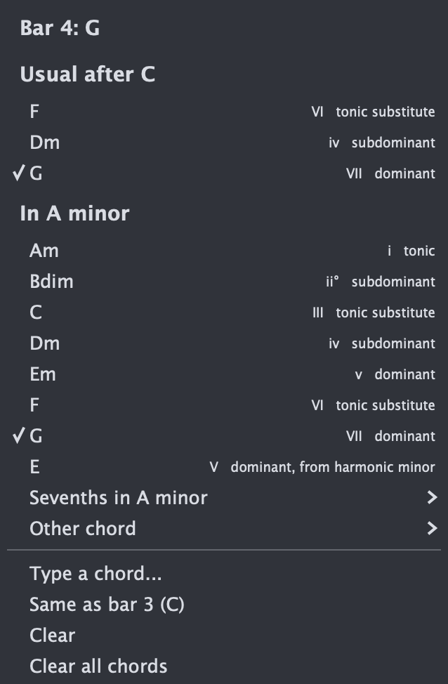
Circle of fifths See how keys and chords connect
See how keys and chords connect
Choose Explain chord progressions... in the chord track's menu, then The circle of fifths. The circle shows the song's key, or any other key you pick, with an explanation written for that key.
- The twelve major keys round the outside, their relative minors inside, and the key signatures around them
- The chords of your key light up in their family colours with their numerals. Together they make a wedge.
- Neighbours differ by one note, so a song can move to them smoothly
- Click a key to hear its chord and read what it does; double-click it to explore that key
- Play walks a chain of fifths down to the home chord and lights up each chord on the circle as it goes
- Works in minor keys and modes: D dorian sits at the place of C major, the major key with the same notes

Song structure Intro, verse, chorus, drop
Intro, verse, chorus, drop
The Sections row under the ruler marks the parts of your song. Click the Sections label to open the song structure guide, written for beginners.
- Drag across bars to mark a section: intro, verse, pre-chorus, chorus, bridge, solo, breakdown, build-up, drop, outro and more
- Drag an edge to resize a section. Click it to rename it, loop it, jump to it or delete it. Repeated sections are numbered, such as Chorus 2.
- Each type has its own colour, and a line in that colour marks where each section starts behind your clips
- The guide explains how songs are built: bars and 4-bar phrases, repetition and contrast, and the energy curve
- Twelve typical structures, from pop and rock to EDM, trap, blues and film music, each with the styles that use it, why it works and where to start
- Advice on your own structure: an odd section length, a gap, a first chorus that comes late, or no outro
- Put on section track lays out a structure in one click

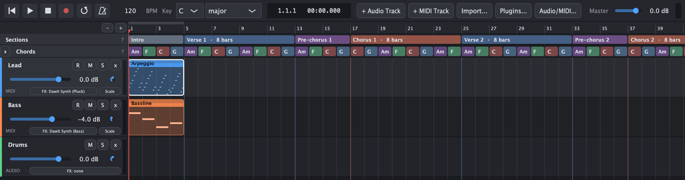
Lyrics Type the words, then put them in time
Type the words, then put them in time
The Lyrics row under the chord track holds the words of your song, each syllable at the beat where it's sung. Write the whole text first, the way lyrics are usually written, and fix the timing after.
- Type it all at once: double-click the row or click Edit.... One line per sung line, an empty line between verses, [Verse] or [Chorus] above a verse, and hyphens for syllables: to-ge-ther
- Spread over your song: each verse lands on its section, a chorus typed once goes on every chorus, and the intro and solos stay free
- Drag a word: it stays where you put it, and the words around it stretch or squeeze to follow. Drag a line to move it whole, or its end to change where it stops
- Tap along: click Tap and the song plays from a bar before the line. Press any letter key the moment the lit syllable is sung; the row shows the line you're tapping, the next one, and which keys do what
- Read every line: open the row with its arrow and each line is written out in full under the syllables, readable even zoomed out to the whole song. The syllable being sung lights up as it plays
- Change the text any time: words you didn't change keep their timing, and new lines go in the gaps. The lyrics are saved with the project
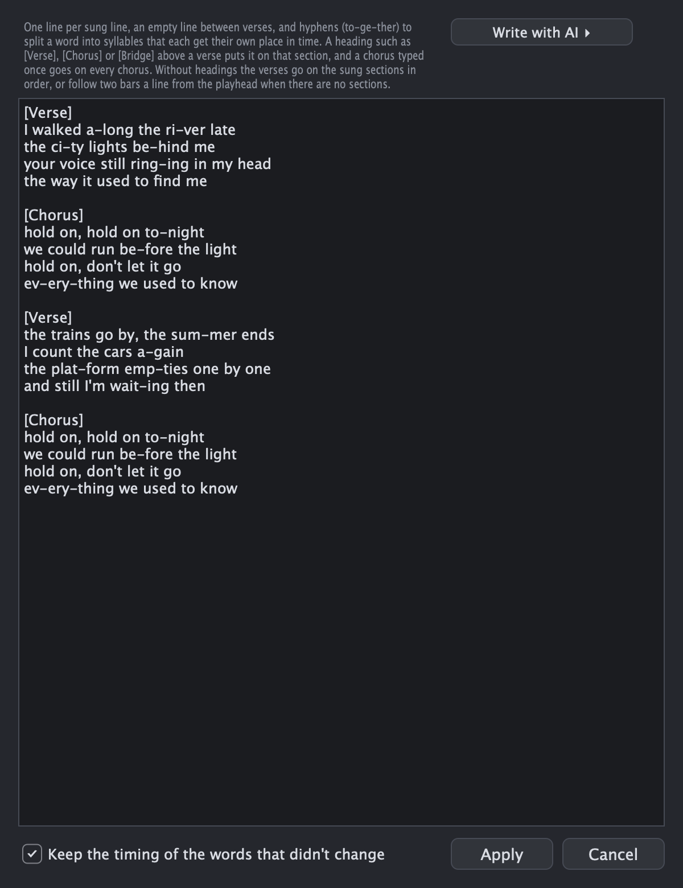
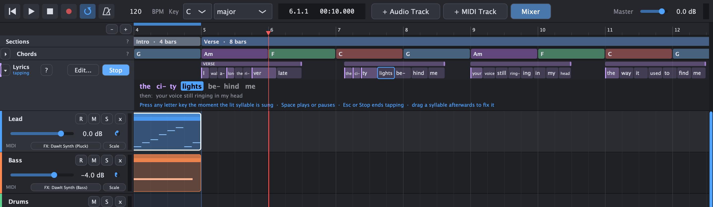
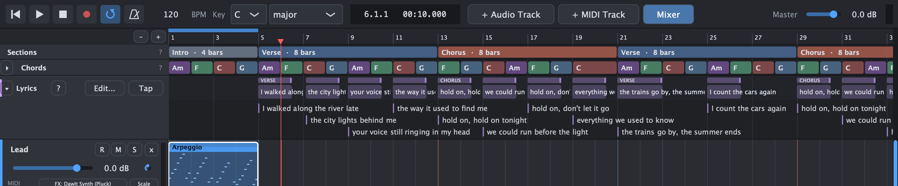
Rewrite a line, find a rhyme, or write the song
The Lyrics window has a Write with AI panel. It asks a language model on your own computer, through Ollama, so your words are never uploaded. Say in a few words what the song is about, select some text and ask. DawIt, not the model, counts the syllables and checks the rhymes of every answer.
- Four actions: Rewrite selection gives three alternatives for the lines you selected, Rhymes lists rhymes for the word at the cursor, Section writes one section, and Write the song writes every sung section at once, after asking before it replaces words you already have
- Say what you want: About, a mood and a point of view for the whole song, chips such as Keep the syllables, Keep the rhyme, More concrete, Shorter and Another angle, and a box for your own words, such as "make it about the sea"
- Checked by DawIt: each alternative says how many syllables it has against the line it replaces ("8 syllables, like the original") and which line it rhymes with. A line that would be hard to sing to the same melody gets a yellow warning
- Put it in: click an alternative, then Use, or double-click it. It goes into the text box, where Cmd+Z undoes it, and Apply puts it in time as usual
- Rhymes by sound: the words the AI picks for your line, then every perfect rhyme the pronouncing dictionary knows, grouped by syllables, then family rhymes. Each is coloured by kind. Double-click one to replace the word. English only
- When Ollama isn't running: the panel says so, and the rest of the window works as before. The ? next to the panel opens the lyrics guide on writing with AI

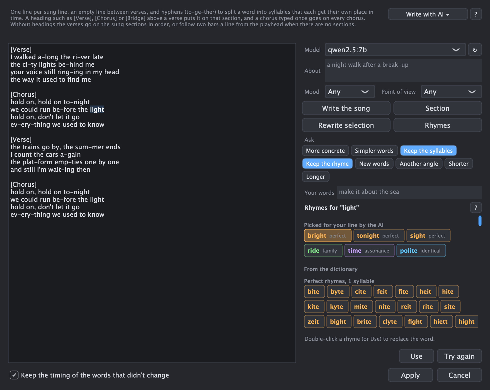
How lyrics are written
Click the ? next to Lyrics for a guide to writing words that sing well, written for beginners, with a picture for every topic.
- What each part says: the verse tells the story, the pre-chorus builds, the chorus repeats the idea, the bridge brings a twist
- Lines and phrases: 2- and 4-bar phrases, room to breathe, and lines with the same number of syllables for the same melody
- Rhyme: where rhymes go and the usual schemes, XAXA, AABB and ABAB, coloured, plus near rhymes and internal rhymes
- Stress and the beat: loud syllables on the strong beats, drawn on a grid, and how to fix a line that sounds like to-ge-THER
- Words on a melody: a note per syllable or a melisma, open vowels on long notes, the key word on the high note, and pickups before the bar
- Prosody, the hook and the title, writing tips, and song forms from verse-chorus to the 12-bar blues
- Singing along: reading ahead while you record, breathing in the rests, coming in on a pickup, and your song's longest line in one breath
- Finding a rhyme: perfect, identical, family, additive, assonance and consonance, from the strongest to the loosest, with the sounds each family covers
- Writing with AI: what a model does well and badly, why DawIt counts the syllables itself, how to ask, and who owns the words
- Your lyrics: each verse's rhyme scheme and syllables a line, lines too fast to sing, choruses that differ, and sung sections without words yet

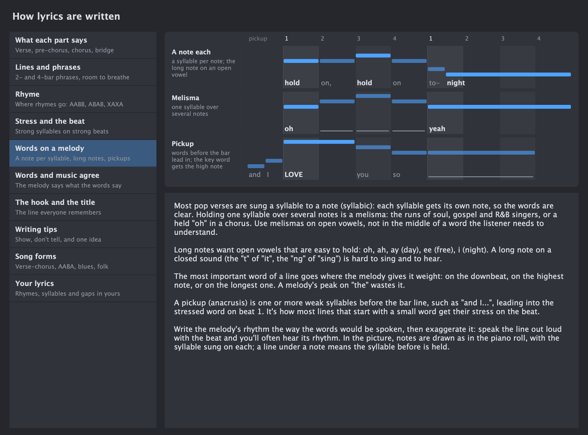
Note lengths Rhythm, from whole notes to triplets
Rhythm, from whole notes to triplets
Click ? next to Snap in the piano roll, or right-click the ruler, to open Note lengths, beats and bars: a guide to rhythm for beginners that ties every idea to what you see in DawIt.
- Bars and beats: what 4/4, 3/4 and 6/8 mean
- Note values from the whole note to the thirty-second, with their British names and the Snap setting for each
- Rests, dotted notes, triplets and swing
- Counting out loud: 1 e & a, trip-let, the backbeat and the off-beats
- Tempo: how long a beat, a bar or a sixteenth lasts at your song's tempo, and typical tempos per style
- Every example is a bar of blocks like the piano roll, with the written note symbol and the count under each note. Play sounds it against the beat and lights each note as it plays.
- In the piano roll, hover over a note to see its value, such as dotted eighth note, 0.75 beats, from 2.3.1

AI generation A co-writer on your computer
A co-writer on your computer
- Chord progressions, melodies, basslines, arpeggios, drums and percussion
- Follows your key, tempo and chord track
- Pick a style and add a prompt in your own words
- Fills empty bars of the chord track
- One-click undo
- Runs locally with Ollama: free, private, no account
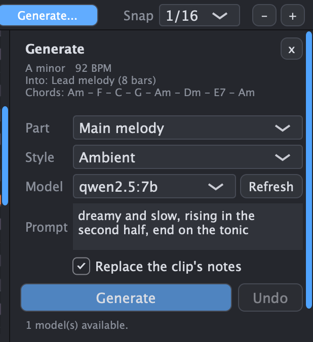
MIDI editing Quick note editing
Quick note editing
- Draw, move and resize notes with snap from 1 bar to 1/32
- Select mode for rectangle selections without drawing by accident
- Velocity mode: choose Velocity (or press V), then drag selected notes up or down to change how hard they play. They all move by the same amount, so the differences between them stay (1 to 127). Notes are shaded from dark (soft) to light (loud) in the track colour, so you can see the loudness
- Filter on scale notes only, so every row and every note is in key
- Nudge with the arrow keys, by semitone, scale step or octave
- Move a whole clip up or down an octave
- Duplicate, move and resize clips in the arrangement
- Split, join, reverse and mute single clips
- See the notes as sheet music with Score view
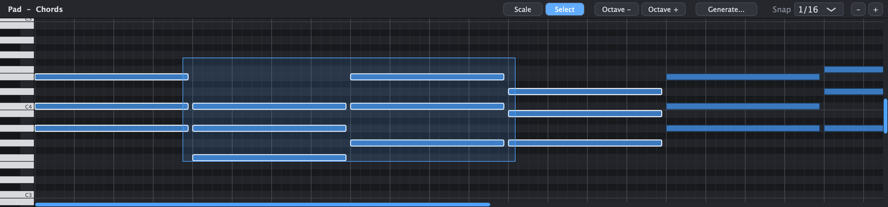
Score view and sheet music See a MIDI track as sheet music and save it as a PDF
See your MIDI part written as sheet music
Notes on a staff are how most musicians share a part. Click Score next to Piano roll in the clip editor (or choose View > Score, Cmd+8) and the selected MIDI track is written out as sheet music, which you can print.
- What you see. The clef, the song's key signature, 4/4, bar numbers that match the ruler, the tempo, section names and chord symbols over the staff, and the notes with stems, beams, ties, rests and triplets. The Clef menu offers Auto, treble, bass, grand staff, guitar and bass guitar.
- It moves with the song. The score scrolls, follows the playhead and lights the notes that sound. Click a note to hear it or anywhere else to move the playhead. Double-click to open the piano roll.
- It is read-only, and rounded. The score is a tidy reading of your MIDI, rounded to a sixteenth or a triplet eighth. The MIDI itself stays exactly as you played it. Hover over a note to see what it is and what it was rounded from. Editing in the score and MusicXML export are not part of it, and each staff shows one voice.
- Sheet music (PDF). The Sheet music (PDF)... button, or File > Export Sheet Music (PDF)..., saves the selected track as A4 or Letter pages at 300 dpi, with the song's name, key and tempo. It is one part at a time, not a full score.
- Learn to read it. The How to read music button opens a guide that explains what you see, ending with your own part written out.
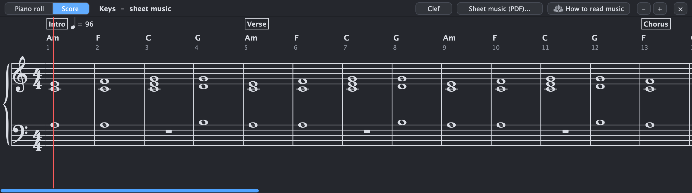
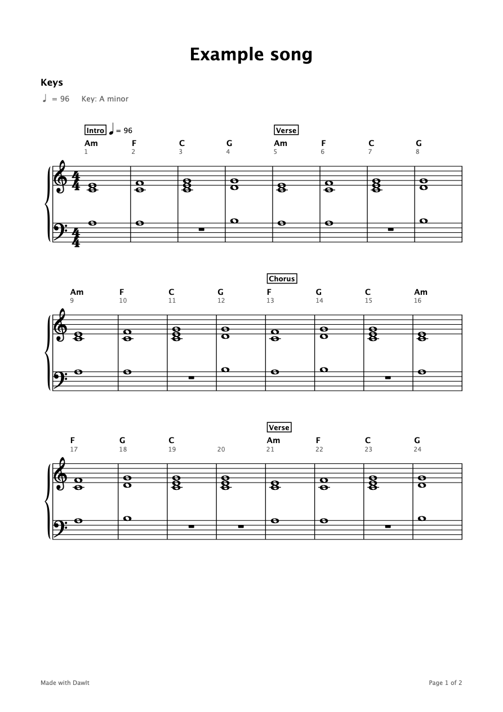
Play, sing & record
Bring the idea into your hands and voice.
Piano and guitar chords From a chord name to your fingers
From a chord name to your fingers
Click a chord in the chord guide, or choose How to play F on piano and guitar... in the chord track's menu, and DawIt shows how to play it. Click the Chords label to open the guide at any time.
- A keyboard with the right hand's notes in blue, the left hand's bass note in orange and the root marked
- Root position and every inversion, one click apart. The one that moves least from the chord before is starred.
- Up to three guitar chord boxes: the easiest shape first, then others further up the neck, with finger numbers, barres, open and muted strings, the tab and how hard each shape is
- For a whole progression, a row of keyboards or chord boxes, each chord voiced near the one before. Green rings mark the keys and fingers that stay put.
- Click any diagram to hear it, with guitar shapes strummed. Play lights each chord on time, and Slowly gives you a whole bar to change.
- Hard chords such as F or Bm come with a way out: put a capo on fret 1 and play the easy E shape
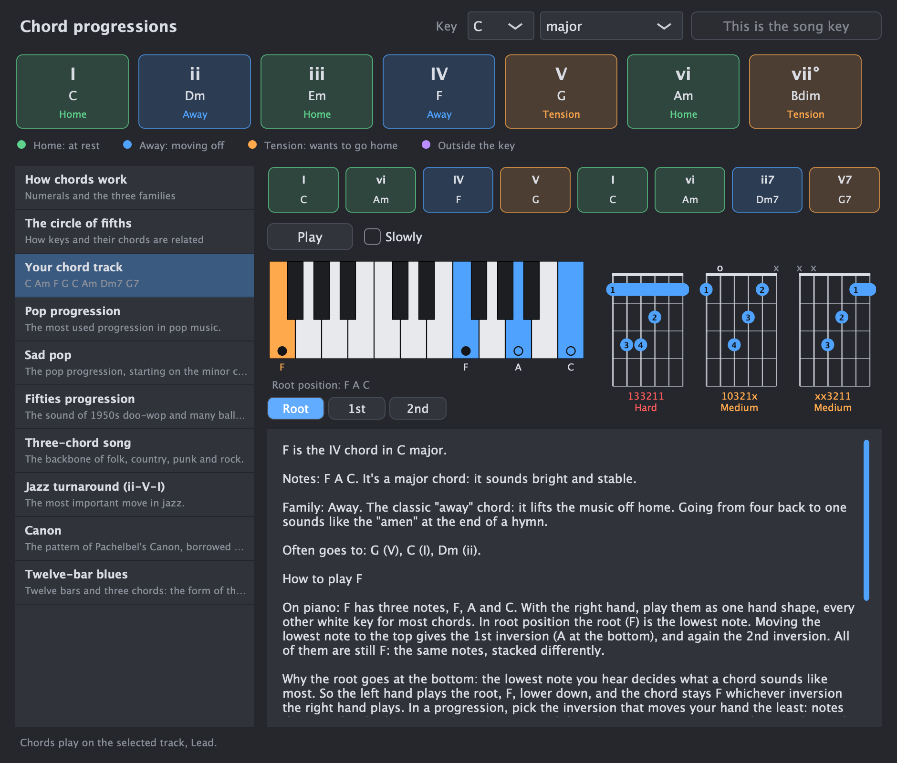
Open the chord track See how to play the whole song
See how to play the whole song
Click the arrow next to Chords to open the chord track. Under each chord it shows how to play it, so you can follow your song on a real instrument.
- Choose Piano for a keyboard per chord, or Guitar for a chord box with fingers
- Each chord is voiced near the one before, as in the chord guide, with the keys and fingers that stay ringed in green
- Click a diagram to hear it
- Click PDF... to save the song's chords as a sheet to print, with the same diagrams
- Closed, the chord track takes a single row, as before. DawIt remembers your choice.
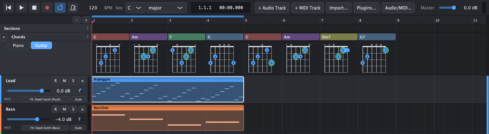
Play along The chords large while the song plays
The chords large while the song plays
Click Play along next to Chords (or press Cmd+4) and play the song on a real piano or guitar. A window shows the chord playing now, large enough to read from across the room, with the next chord beside it, and follows the song as it plays.
- Piano, guitar or both: a keyboard with the right hand in blue and the bass note in orange, a chord box with the fingers, or the two side by side, each chord played near the one before
- Know when to move: the beats of the bar light in turn, a bar runs out until the change, and the next chord lights up on the last beat before it, with the keys and fingers that stay ringed in green
- Where you are: the section and the bar in it, such as Chorus 2 · bar 4 of 8, and the next eight chords in their colours along the bottom
- A capo for guitar: pick one and the boxes show the shapes to play with it. The capo that turns most of the song's chords into open chords is marked with a star
- Loops and breaks: it goes round the loop as the song does, and a bar without a chord says when the next one comes
- Tips from teachers: Tips... opens the chord guide's Playing along topic: look at the next chord, keep the fingers that stay down, and keep the rhythm going when a change is late. It also points out your song's quickest change and its barre chords
- Any song: detect the tempo and the chords of a recording first, then play along with it. Make the window full screen on a second display or a tablet next to your instrument
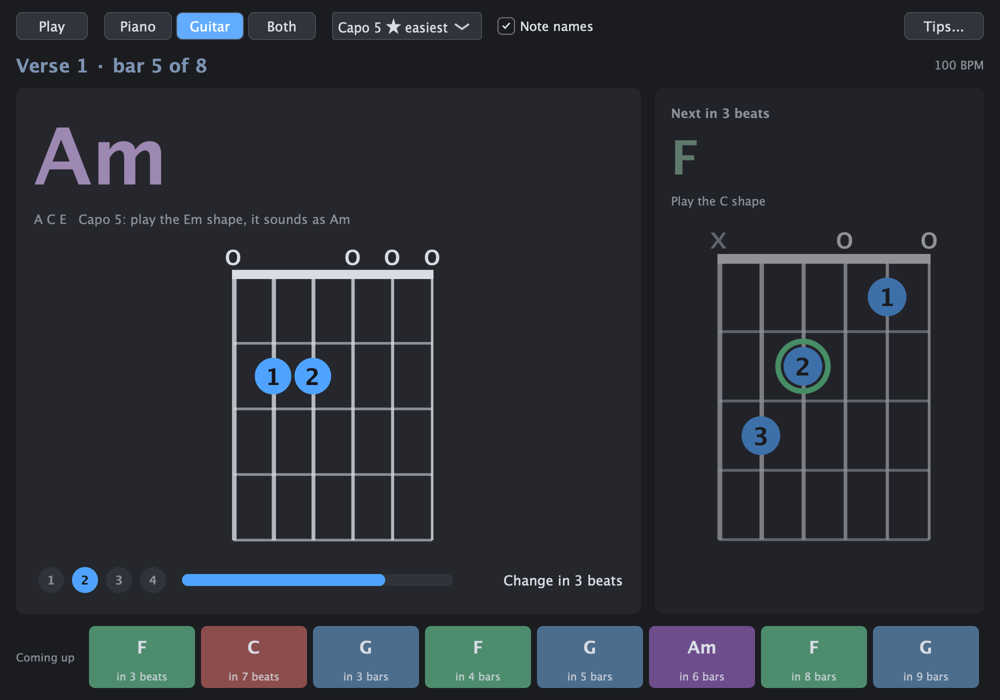
![The play-along window on Both in Chorus 2, bar 4 of 8 at 100 BPM. Am is playing, large, as a piano keyboard with A in the bass and A, C and E in the right hand, and as a guitar chord box x02210 with fingers 1, 2 and 3. On beat 4 of 4 the bar has nearly run out and says Change in 1 beat, so the next chord, F, is lit with a blue frame: its keyboard and chord box show green rings on the keys and fingers that stay. Along the bottom the chords coming up: F in 1 beat, G in 5 beats, C in 3 bars, Am in 5 bars and F in 7 bars](assets/screenshots/play-along.png)
Print your chords Chord sheets as PDF
Chord sheets as PDF
Take the chords to the piano, the guitar or the rehearsal. DawIt saves them as A4 pages, drawn the way it shows them on screen.
- Your song: open the chord track, pick Piano or Guitar and click PDF.... The sheet shows every chord the song uses, then bar by bar under its sections, each chord played near the one before, with % where a chord goes on
- Notes on a staff: for a melody or a part written as sheet music, see Score view and sheet music
- Any key: File > Export Chord Sheet (PDF)..., or Chord sheet (PDF)... in the chord guide. The key's seven chords, their sevenths, the chords songs in it often borrow and its well-known progressions, for piano, guitar or both
- Piano: a keyboard per chord with the right hand, the bass note and the inversions spelled out
- Guitar: a chord box per chord with the fingers, the tab, how hard it is and another shape, and the capo that makes a hard key easy
- Every chord with its numeral and family colour, and spelled for the key: Db and Cb in Eb major, G#m in E major
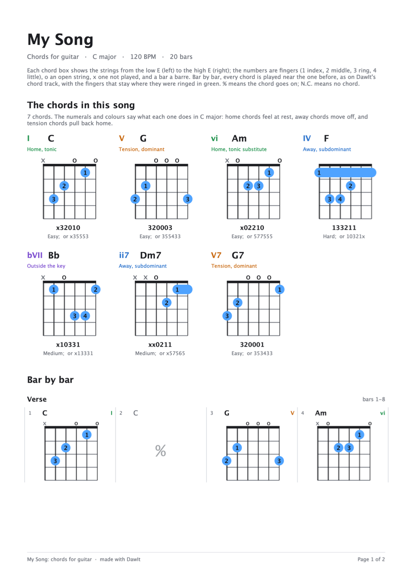
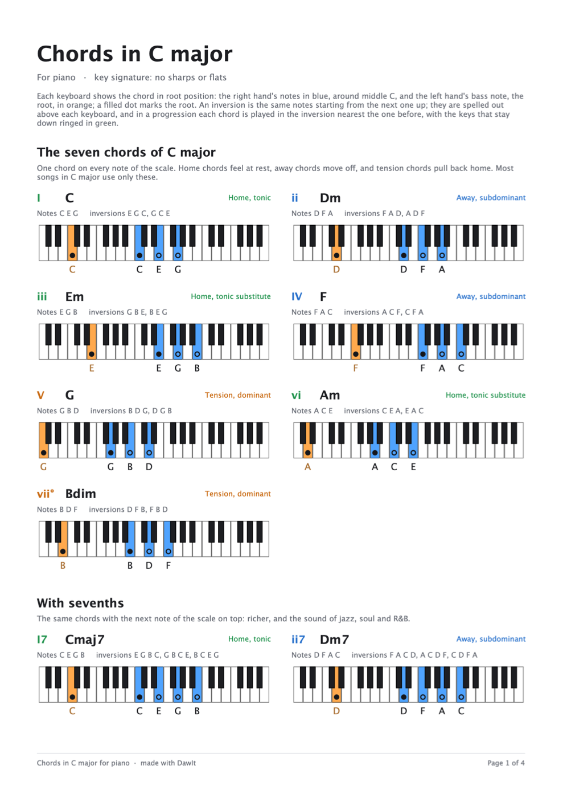
Sing along Read the words while you record the vocals
Read the words while you record the vocals
Before you record a vocal, click Sing along next to Lyrics (or press Cmd+5). A window shows the line to sing now in letters large enough to read from the microphone, and the colour runs over each syllable in time with the lyrics track, so you come in on time and phrase each line the way you wrote it. Arm an audio track, press Record and sing: no lyric sheet in your hands, no paper rustling into the take.
It's a tool for recording your own songs, not a karaoke machine: the words, their timing and the backing all come from your project.
- The line now, the next one under it: read ahead while you finish a line, with the one you've just sung fading out above
- The colour follows your timing: each syllable fills from where it sits on the lyrics track to the next one, so a held note fills slowly and a quick word fast
- A count-in after a rest: 4, 3, 2, 1 before the line, so you breathe in and come in on time. In a long rest it says when the next line comes
- Where you are in the take: the section and the bar, in the section's colour, and it keeps up while recording, allowing for the audio output's latency
- Readable at the microphone: three text sizes, a long line wraps onto two rows, and the words grow with the window, up to full screen on a second display
- Learn a song before you record it: on a recording, Remove vocals can keep the original singer quietly as a guide while you work out the phrasing
- Tips for the take: Tips... opens the lyrics guide's Singing along topic: breathing in the rests, coming in on a pickup, headphones, and your song's longest line to sing in one breath
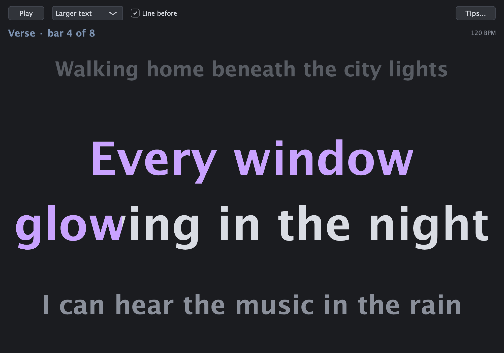
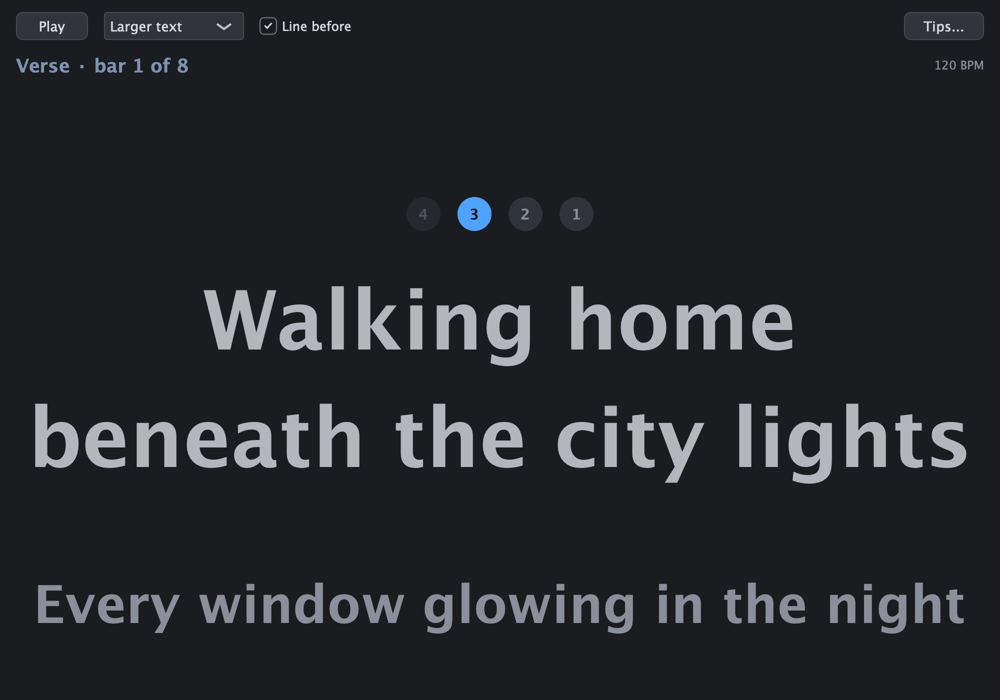
Singing techniques Learn how the voice works, then check your melody against your range
Learn how the voice works, then check your melody against your range
A guide for people who sing on their own songs and have never had a lesson. It opens from Tips... in the Sing along window, from the lyrics guide's Singing along topic, from the Singing techniques... item in the menu of a vocal track, and from View > Theory Guides... in the Singing area. It is a start, not a teacher or a doctor: it says when to see one.
- Thirteen topics: how the voice works, posture and breathing, warming up, voice types and range, registers and the break, singing in tune, vowels and words, vibrato and straight tone, loud, soft and belting, harmonies and doubles, looking after your voice, the microphone, and your voice and your song
- Find your range by ear: pick a voice type from bass to soprano, or set your lowest and highest notes on the menus. A click on a key of the keyboard plays the note, and a right-click offers Set as my lowest note and Set as my highest note. DawIt remembers your range for every song
- Your melody against your range: choose a MIDI track as the melody, and each section gets a bar from its lowest to its highest note under your range. The text says which section goes above or below it, by how many semitones, and which key to try, such as G minor instead of A minor. When a key change of 5 semitones or more is needed, it suggests singing the song an octave lower or higher instead. Nothing in your song changes
- Pictures you can hear: the formants of two vowels, breaths marked on a line, warm-ups, a pitch over time against its target in cents, harmonies a third above, and the curve of a microphone's distance. A click plays the notes
- Typical values: a semitone is 100 cents, many listeners hear a note as out of tune from about 20 to 25 cents, and a break comes around E4 for a baritone and G4 for a tenor. The text says when they are typical rather than rules

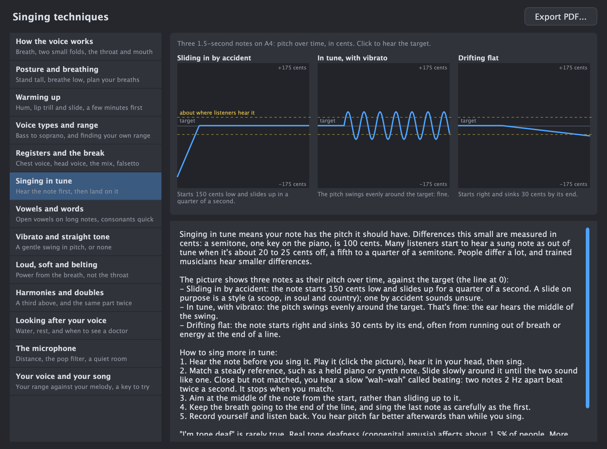
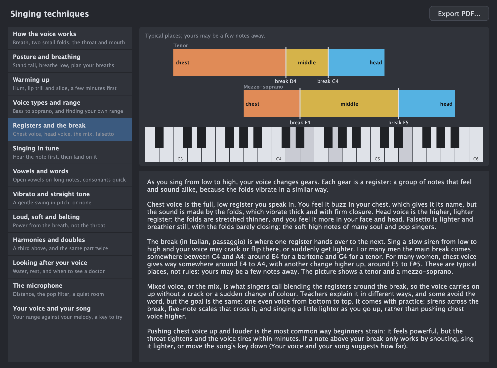
Sing this Sing this: a computer voice sings your melody
Sing this: a computer voice sings your melody
Once a melody has its words on the Lyrics row, a computer voice can sing it, so you hear the song with a vocal before you have found a singer. It runs on your own computer and nothing you sing leaves it. English only for now.
DawIt comes with no voice. You add one yourself, a voice such as the one DawIt suggests, and each voice has its own terms from the person who made it.
- Open it. Right-click a MIDI clip and choose Sing this melody..., or choose Sing the lyrics with a computer voice... in the Lyrics row's menu to sing the whole melody track. The ? opens the guide
- Add a voice. Add a voice... takes a .zip or .oudep file or a folder, unpacks it into DawIt's Voices folder and checks it: a missing file is named, and a voice with no English in it is refused. Get a voice... shows where to find one, the DiffSinger wiki's list of English voices and the steps
- Its terms stay in view. The voice's credit and its vocoder's licence sit beside its name, and Terms... opens what its maker wrote
- See what will be sung. The notes are drawn as in the piano roll, each with its syllable and its sounds below it (n ay t for night). A held note is a line, notes without words are grey, syllables that aren't sung are red, and a click plays a note
- Advice before you sing. Good news first, then what to fix: notes without words, syllables between notes, counts that differ, words guessed from their spelling, notes outside the voice's range, or ready to sing
- Match the notes to the words. When there are more or fewer notes than syllables, Match the notes to the words adjusts a copy of the notes, and the strip says how many notes and syllables there are and how many note starts would move by more than a 16th. The choice beside it has three methods. Match to the words' timing (the default) puts a note on each syllable's time and holds it until just before the next, so the voice sings smoothly, but not across a rest of half a second or more. Match by merging and splitting merges the shortest notes and splits the longest until there is one per syllable, so the melody keeps its own rhythm. Notes as long as the melody's uses the same note starts as the first, but each note keeps the length it had in the melody
- Choices. Words: as timed on the Lyrics row, or one syllable per note. Pitch: Natural, where the voice draws its own slides and vibrato, or Exact notes. Breaths in rests of half a second or more. Quality: Draft, Good or Best, from quick to cleanest. And whether to mute the melody track afterwards
- The result. Sing works phrase by phrase behind a progress window with Cancel, then adds an audio track named after the voice and the melody, right after the melody's track. The melody's notes and sound never change. With the notes matched, it sings from the adjusted copy: Make a new track with them keeps the copy as a MIDI track of its own, and Use my notes goes back to yours
- How a word is sounded out. Each word is looked up in the voice's own dictionary, then in the CMU Pronouncing Dictionary built into the app, and a word in neither is guessed from its spelling and flagged
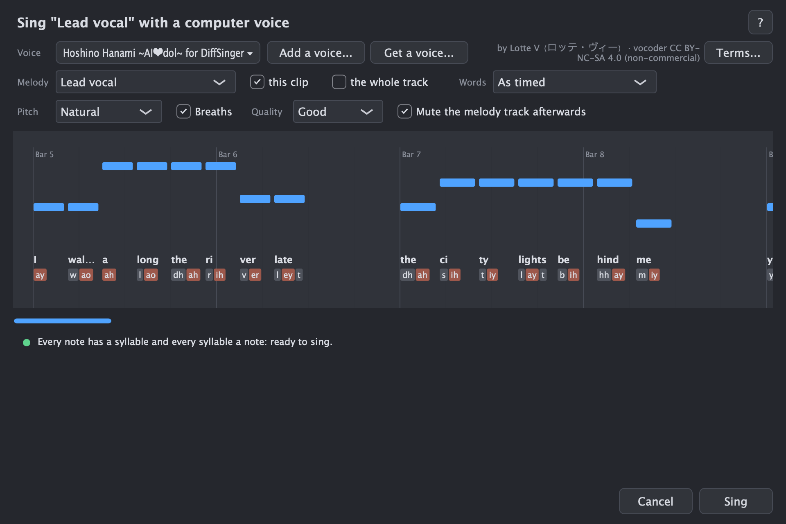
![The Sing window for Lead vocal with Hoshino Hanami chosen, where the melody has fewer notes than the words. Some blue note bars have no syllable above them and a few syllable names such as the, ci and me are red. Under the notes, a button Match the notes to the words sits beside a choice set to Match to the words' timing, and beside them it says 88 notes, 110 syllables, and that matching would move 22 note starts by more than a 16th. A yellow dot below warns that 21 syllables start between notes, so they aren't sung](assets/screenshots/sing-match.png)
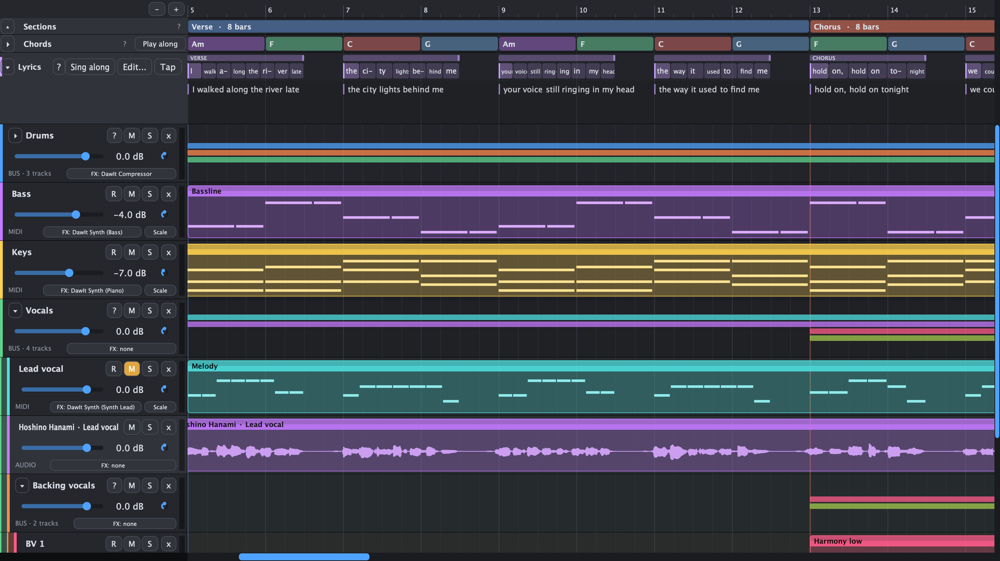
How a computer sings, and getting a voice
The lyrics guide has two topics for this. Click the ? in the Sing window, or open the guide from the Lyrics row.
- How a computer sings. Words become sounds (night is n ay t), the vowel carries the note and the consonants slip in just before it, and a chain of models decides how long each sound lasts, draws the pitch, paints the sound and turns that picture into audio. The picture sings feel the night, and a click plays it
- Getting a voice. What a voice is, where to download one, how to add it, what its folder holds, how to tell it worked, what its terms mean in plain words and what to do when it fails

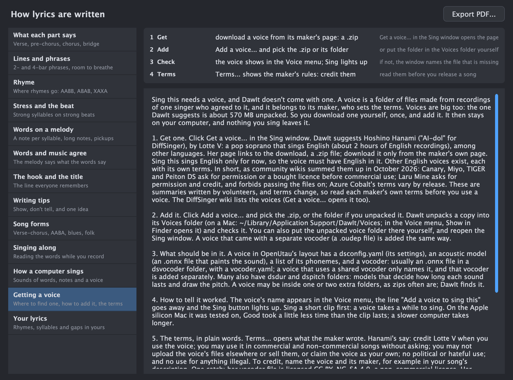
Recording Play it in
Play it in
- Record from any USB MIDI keyboard
- Velocity and sustain pedal included
- Metronome and one-bar count-in
- Loop recording adds every pass to the same take
- With Scale on, only notes in the key sound and record
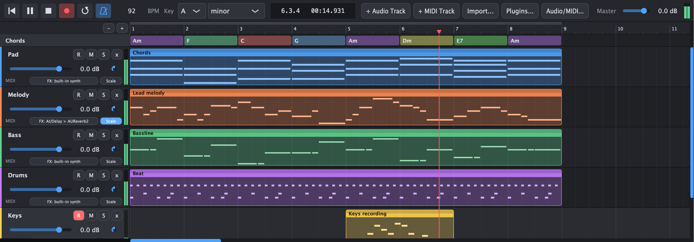
Recording No MIDI keyboard? Play with the letters
No MIDI keyboard? Play with the letters
- Turn it on: the keyboard button right of the metronome, or View > Play with Computer Keyboard (Cmd+K). DawIt remembers it
- The letters: A to L are the white keys, starting on C, and W E T Y U O P the black ones
- Octave and velocity: Z and X move the octave, C and V set how hard the notes play (20 to 127), because most computer keys can't tell how hard you press
- A strip at the bottom: shows each letter with its note, lights the keys you hold, and plays when you click or drag across it
- Like a MIDI keyboard: the notes go to the selected track, or the armed ones, so previewing, playing along and recording with R all work. With Scale on, only notes in the key sound
- Learn more: the topic The computer keyboard in the What is MIDI? guide
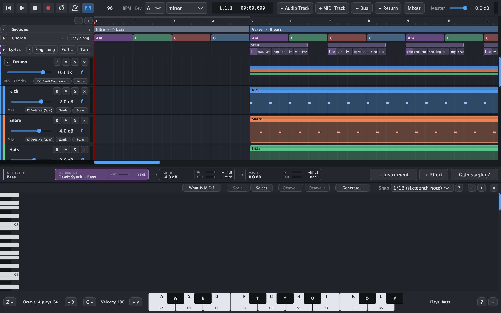
Recording audio Sing or play it in
Sing or play it in
Record a voice or an instrument through your audio interface onto an audio track. Where it helps, DawIt explains what is happening, from the level of the signal to why a take arrives late.
- Arm and choose the input: the R button arms an audio track, and its input chip picks Input 1, another input or a stereo pair. Audio and MIDI tracks can be armed together
- Record in time: press Record with the metronome and a count-in. The lane shows a red growing take with live peaks, and the track's meter shows the level, with the over-0 dB mark held for 2 seconds
- Takes on a loop: with the loop on, every pass becomes a take stacked at the same place. The newest plays and the others are muted; the clip's right-click menu picks another or keeps just one
- Hear yourself: Mon plays the input through the track's effects and fader. It is off at every start, with a warning about headphones
- Latency corrected: each take is moved earlier by the delay the device reports, plus what Measure latency in Audio / MIDI Settings found by playing eight clicks and listening for them
- Saved as WAV: takes are 24-bit WAV files in an Audio Files folder next to the project, and DawIt tells you when a take was silent
- A guide to how recording works: the audio interface, setting the level, buffers and latency, hearing yourself, why takes are moved earlier and takes, with a Your session topic that reads your device and last take. It opens from the track and clip menus and the ? in Audio / MIDI Settings
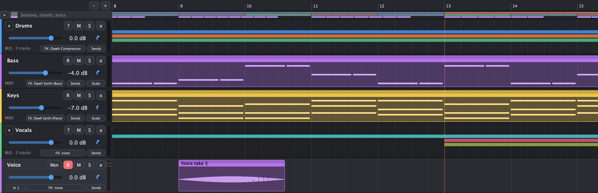

Tuner Tune a guitar, bass or ukulele with a note and a needle
Tune a guitar, bass or ukulele with a note and a needle
View > Tuner... (Cmd+7) listens on an audio input, either the interface channel you choose or the selected track's, and shows which note you are playing and how far off it is.
- The note and the needle: the note in large letters and a needle from 50 cents flat to 50 sharp, green within 3 cents, yellow within 10 and red beyond. In words it names the nearest string (“A string: 12 cents flat, tighten it a little”) and says whether the note is in the song's key
- Tunings: Guitar standard, Drop D, DADGAD, half a step down, Bass with 4 or 5 strings, Ukulele and Chromatic
- String buttons: click one, or press 1 to 6, to hear its note and to tune to that string alone
- Reference pitch: A4 can be set from 415 to 466 Hz; the default is 440 Hz
- While you tune: the track's output is muted (you can switch that off), a note stays for 2 seconds after it fades, and a bass's low E at 41.2 Hz is found with a longer analysis window
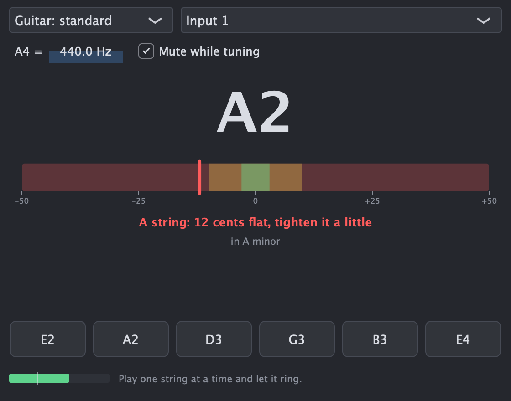
How to tune a guitar, a guide for beginners
Click ? in the tuner, or find How to tune a guitar in View > Theory Guides, under Sound.
- Ten topics: what a tuner shows, cents and beats, standard tuning and other tunings, the reference pitch, how to tune a string, why strings drift, tuning by ear at the fifth fret, harmonics at the 12th, 7th and 5th fret, bass, ukulele and low notes, and your tuning and your song
- Pictures: a string held still at the 12th, 7th and 5th fret, and string buttons you can click to hear each note
- Your tuning and your song: checks the open strings against the song's key, whether a bass or guitar part goes lower than the lowest string, whether the reference pitch matches DawIt's instruments, and how far each string was off when the tuner last heard it
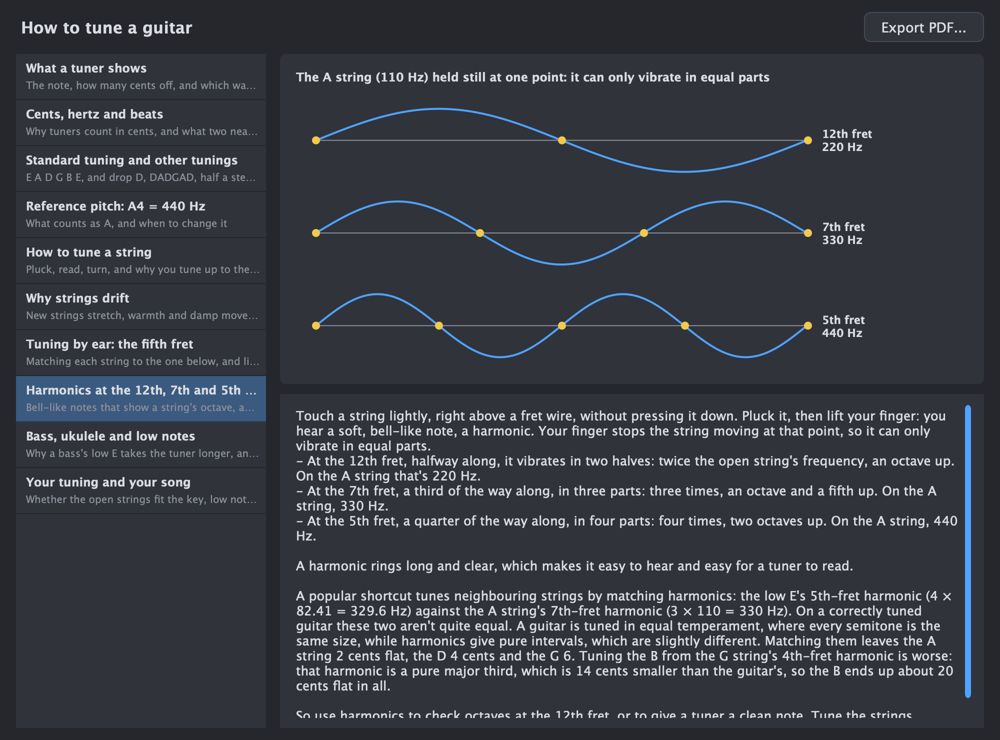

Explore a recording
Hear the parts. See how a song is built.
Stems Take a song apart
Take a song apart
Right-click an audio clip and choose Split into stems... DawIt separates it into drums, bass, vocals and the other instruments, each on its own track right below. Solo the bass to hear exactly what it plays, or mute the drums and play along.
- Demucs v4, one of the best open models for separating music
- Runs on your own computer, nothing is uploaded
- The model (84 MB) downloads once, the first time you use it
- The original clip is muted, so the stems replace it
- Parts that aren't in the song are left out: a loop without vocals gets no vocal track
- Roughly as long as the song plays on an Apple Silicon Mac, with a progress bar and Cancel
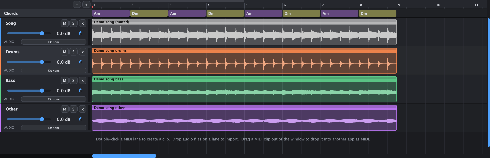
Remove vocals A karaoke version of any recording
A karaoke version of any recording
Right-click an audio clip and choose Remove vocals (karaoke version)... DawIt takes the singer out and keeps the band, so you can learn the vocal part with Sing along showing the words, or practise it on piano or guitar with Play along showing the chords.
- The band on one track: drums, bass and the other instruments back together on a new Karaoke track, or as stems on tracks of their own
- The vocals kept below: on a Vocals track, muted, or quietly at -12 or -6 dB as a guide to follow the melody
- Nothing plays twice: the original clip is muted, the rest of its track plays on
- Done by sound, not by place: Demucs hears what a voice is, so the bass, kick and low end stay, and so does the stereo
- On your own computer: the same Demucs model as the stems (84 MB, downloaded once), in about the time the song plays
- Honest about the limits: lead and backing vocals both go, and some reverb on the voice can stay faintly
Why not the old trick of cancelling the middle of the stereo? What is sound? explains it in its topic Taking the vocals out, and measures it on your own clip. Switch on Hear left minus right and play the song to hear the kick and bass vanish with the voice.
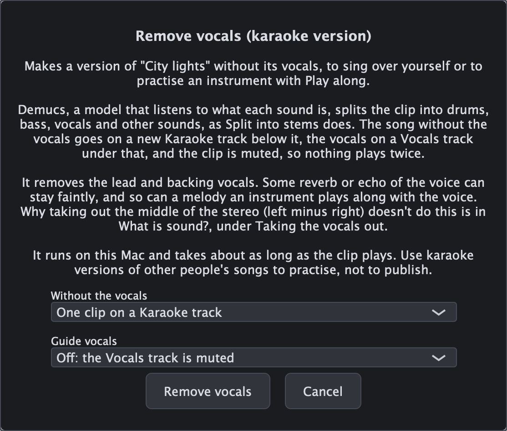
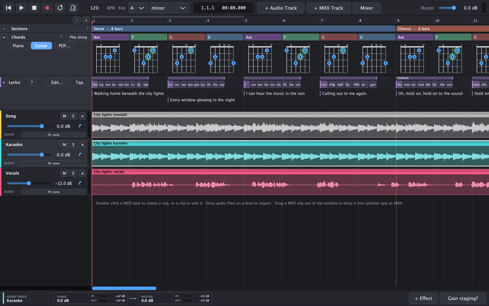
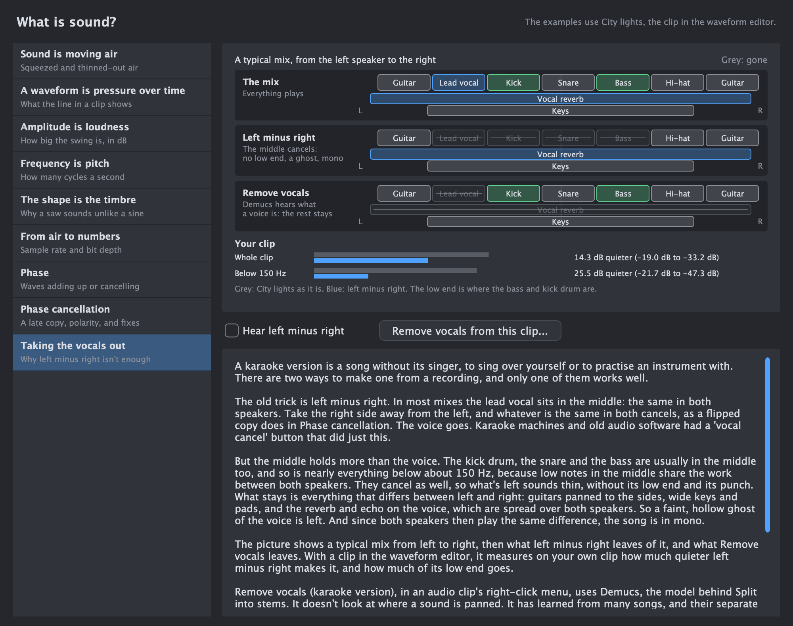
Audio to MIDI From sound to notes
From sound to notes
Right-click an audio clip and choose Convert to MIDI... DawIt listens for the notes and writes them into a new MIDI track, where you can see them in the piano roll, play them with any sound and change them.
- Spotify's Basic Pitch, built in: no download, no account
- Chords or one note at a time, for a melody, bass line or voice
- Choose how sensitive it is, and quantise to 1/32, 1/16 or 1/8
- A whole song converts in a second or two
- Works best on one instrument or voice, such as a stem
- A bass gets the bass sound, vocals the lead
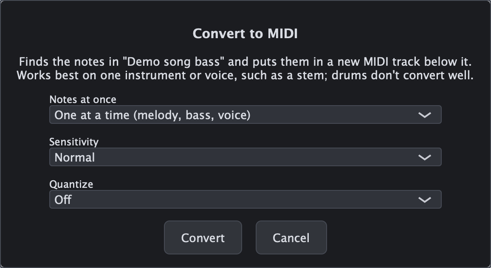
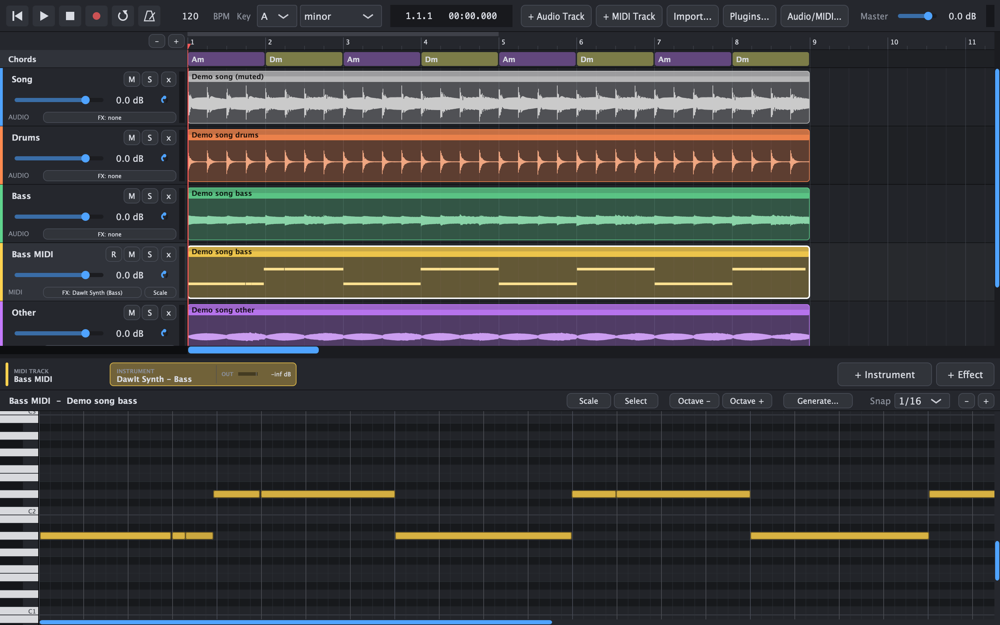
Hits to MIDI Turn the hits in a drum recording into a drum part
Turn the hits in a drum recording into a drum part
Right-click an audio clip and choose Hits to MIDI... DawIt finds the hits and shows each one as a marker on the waveform. You choose how they are written, and Make MIDI track adds a track with DawIt Drums right below the clip.
- Find the hits: Sensitivity (-6 to -60 dB) sets the quietest hit that counts, and Minimum gap (5 to 250 ms) stops one hit counting twice. The markers update at once
- Kick, snare or hi-hat: Sort by drum gives each hit the drum whose part of the spectrum holds most of its energy, or write every hit as one drum
- Keep the feel or snap: keep the timing as played, or snap to 1/4 up to 1/32 or triplets, with a strength from 0 to 100%
- How hard: velocity Natural, Gentle, Strong or the same for all
- Layer or replace: keep the original playing under the new drums, or mute the clip
- Listen first: play the clip, the hits or both before you make the track
- Fix it by hand: click a marker to select it, drag it, click an empty spot to add a hit, Delete to remove one, or right-click to change its drum
- On your computer: plain signal processing, no download. The guide How drum triggers work explains each step
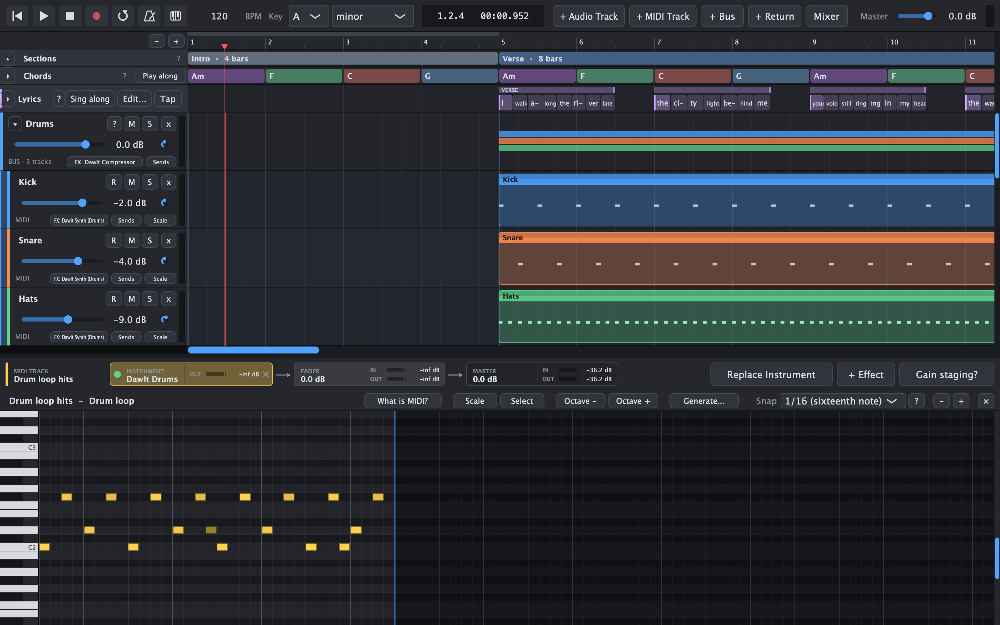
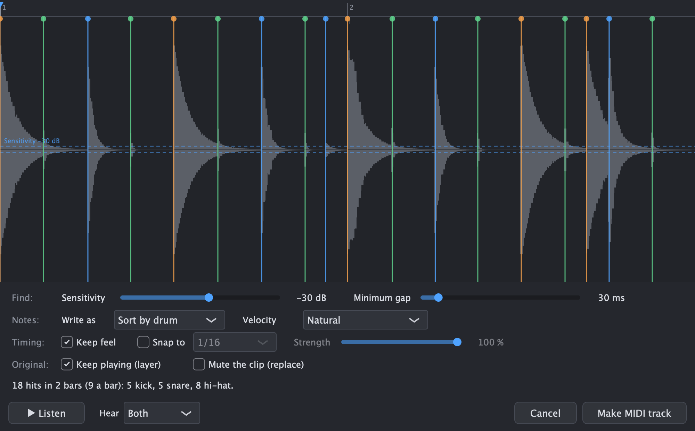
Detect tempo Find a song's BPM, and line it up with the bars
Find a song's BPM, and line it up with the bars
Right-click an audio clip and choose Detect tempo... DawIt finds the beat, says how fast it is and whether it stays steady, and sets your song to that tempo. Do this first when you load a song you want to study: then its bars, chords and words line up with DawIt's.
- The BPM and the beats: where the sound suddenly gets louder, mostly the drums, and how often that repeats. The beats land within a few milliseconds of the drums
- To the hundredth: a recording made without a click is seldom at a whole tempo. DawIt sets it to two decimals, such as 96.84 BPM, so the bars still line up at the end of a long song. You can type decimals in the BPM too
- Steady or drifting: a song made to a click stays on one tempo; a band without one drifts, and DawIt says between which tempos
- Half or double: a detector can find twice or half the tempo you'd tap your foot to, so both are offered next to the one it found
- Lined up: the clip moves so its first downbeat starts a bar, guessed from where the chords change and the kick hits
- Explained: the dialog says how it was found, and what a new tempo does to your MIDI, chords and audio
- Quick and on your computer: plain signal processing, no model and no download; a song takes a second or two
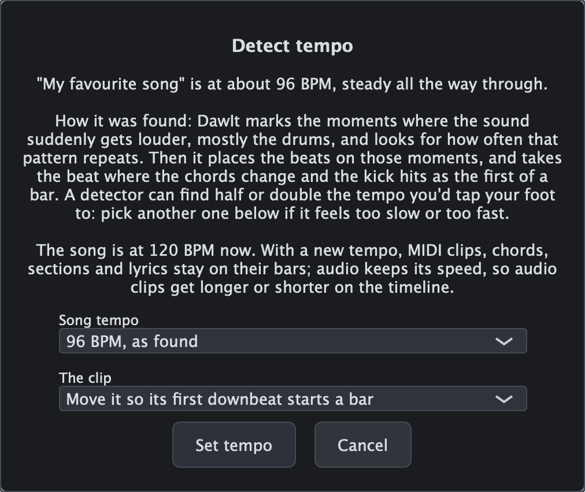
Follow the band A band without a click: a tempo for every bar
A band without a click: a tempo for every bar
A band that plays without a click doesn't keep one tempo: it pushes in the chorus and settles in the verse. With one tempo for the whole song, DawIt's bars would drift away from the recording. Follow the recording gives every bar its own tempo instead, so the bars stay with the band from the first to the last.
- Offered when it drifts: when Detect tempo hears the tempo move, the first choice is Follow the recording, bar by bar, with the slowest and fastest bar
- Downbeat to downbeat: each bar lasts from one of the band's downbeats to the next, so every bar line lands on the band's first beat
- The recording stays as it is: nothing is stretched. The bars move to the band, not the band to the bars
- Everything on the bars follows: chords, sections, lyrics, your MIDI parts, Play along and the metronome. Chords and sections you detect afterwards land on the band's bars
- The Tempo row: the tempo bar by bar as a line, with the bar and its BPM under the mouse. The BPM in the transport follows the playhead. Right-click the row to make the tempo steady again
- Saved and exported: projects keep the tempo of every bar, and MIDI files get a tempo change per bar, so another DAW plays your parts in time with the band
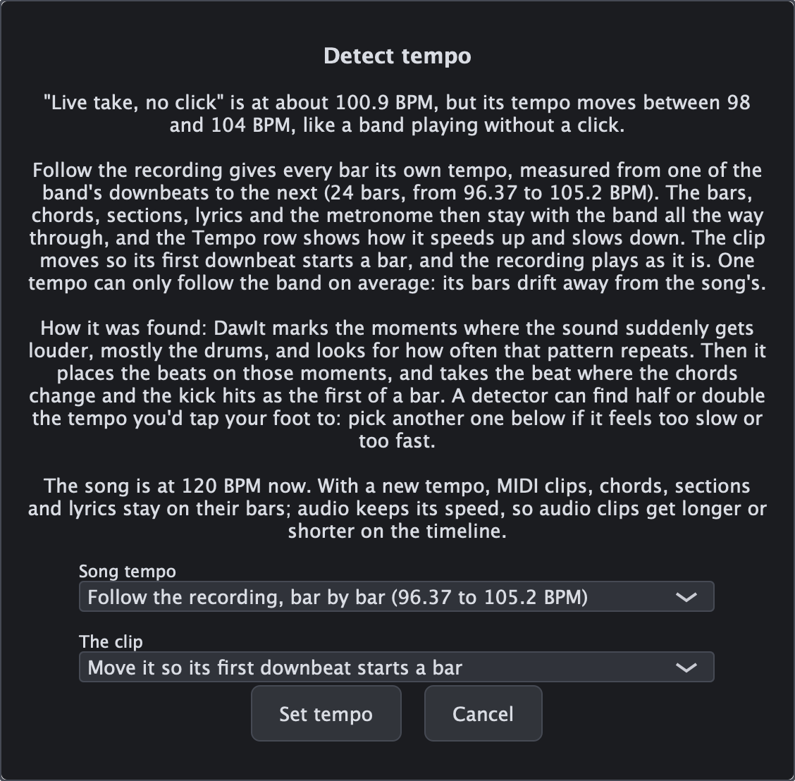

Detect chords The chords of a recording, bar by bar
The chords of a recording, bar by bar
Right-click an audio clip and choose Detect chords... DawIt listens to which notes sound in each bar and names the chord, then puts the chords on the chord track, where the chord guides explain the progression and show how to play it.
- Set the tempo first: the chords go one per bar of your song, so the recording has to be at the song's tempo with its bars on the bar lines. DawIt checks this, and when they don't line up it says so and offers Detect tempo first
- Major, minor and sevenths: every major, minor, 7, maj7 and m7 chord, with the bass note deciding between close ones
- Through the drums: short sounds are filtered out, so only the notes that last count
- The key too: it says which key the chords are in, and can set your song to it
- Only the clip's bars change: the rest of your chord track stays as it is
- Check by ear: passing notes, a busy bass or a sung melody can fool it, as the dialog says

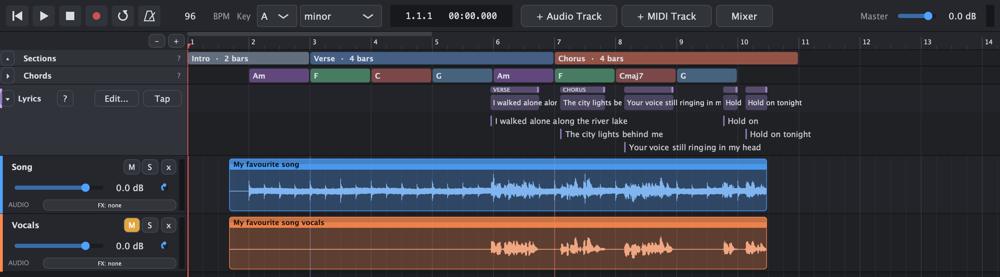
Detect song structure The verses, choruses and bridge of a recording
The verses, choruses and bridge of a recording
Right-click an audio clip and choose Detect song structure... DawIt listens for where the music changes and which parts come back, names them, and puts them on the Sections row. Then the song structure guide shows how the song is built: where the first chorus comes, how long each part is and which known structure it follows.
- Set the tempo first: the parts go on your song's bars, so the recording has to be at the song's tempo with its bars on the bar lines. As with chords, DawIt checks this and offers Detect tempo first when they don't line up
- Where a part starts: where the chords, the sound (bright or dull), the loudness or the drums change, after 4, 8 or 16 bars where it can, because songs are built from 4-bar phrases
- The same music heard again: parts with the same chords in the same order and the same sound get the same letter, so a song reads as A B C B C D C E
- Named, with the reason: the loudest music that comes back is the chorus, the other music that comes back is the verse, a part just before each chorus is a pre-chorus, and a part heard once after the second chorus is a bridge. The dialog says why each part got its name
- Only the clip's bars change: the dialog says how many sections it replaces, and the rest of the Sections row stays
- Check by ear: a verse and chorus on the same chords with the same sound can't be told apart. Drag a section's edges or click it to change its type
![The Detect song structure dialog for My favourite song. It lists the parts on the song's bars: Intro, bars 1-4 (A), the start, heard once; Verse 1, bars 5-12 (B), heard twice, quieter than the chorus; Chorus 1, bars 13-20 (C), heard 3 times, the loudest music that comes back; Verse 2 and Chorus 2 the same music as Verse 1 and Chorus 1; Bridge, bars 37-44 (D), heard once after the second chorus; Chorus 3; and Outro, bars 53-56 (E), the end after the last chorus. Below are the music in order, A B C B C D C E, how it was found, and the buttons Put on Sections row and Cancel](assets/screenshots/detect-structure-dialog.png)
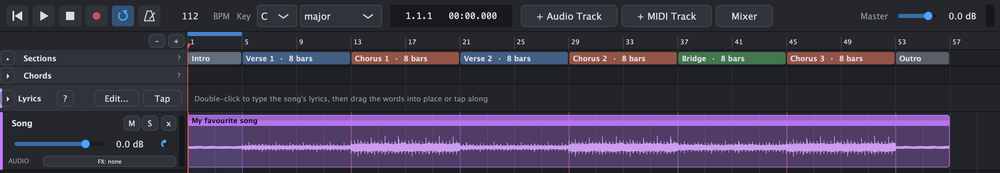
Detect lyrics From a vocal recording to timed lyrics
From a vocal recording to timed lyrics
Right-click an audio clip and choose Detect lyrics (English only)... DawIt listens to the singing and writes the words on the lyrics track, each syllable at the moment it's sung. Read along while it plays, fix a word the model heard wrong, or look at the rhyme scheme in the lyrics guide.
- English vocals only, for now: it uses Whisper's English models and splits words into syllables by English spelling. Vocals in another language come out as English words that sound alike
- From a whole song or a vocal track: on a full mix, Demucs finds the vocals first, so the band isn't heard as words
- Lines, verses and syllables: a new line at each pause, a verse per section headed [Verse] or [Chorus], and every word split into its syllables, to-ge-ther, placed where it's sung
- Words fitted to the voice: Whisper's word times on singing can be a little off, so each word starts where the voice begins, when that is within 0.15 seconds of where Whisper put it. Word timing in the dialog switches this off to keep the words as Whisper heard them
- No made-up words: quiet and instrumental parts are left out, and so are the phrases speech models invent from silence, such as Thanks for watching
- Two models: Small (488 MB) is quicker; Medium (1.5 GB) hears more words. The one you choose downloads once, the first time
- On your own computer: OpenAI's Whisper through whisper.cpp, on the Mac's graphics chip. Nothing is uploaded
- Only the clip's bars change: the rest of your lyrics stay as they are, and the words are edited like typed ones
- The vocals kept: from a full mix, the vocals Demucs found go on a new, muted Vocals track, to listen to or use later
- Set the tempo first: with Detect tempo, so the words land on the right bars and sections
The lyrics of other people's songs belong to them: use what it finds to learn and practise, not to publish.
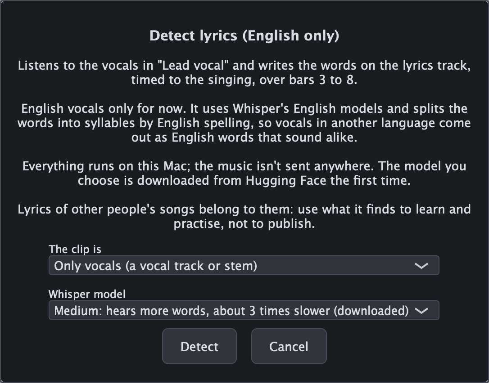
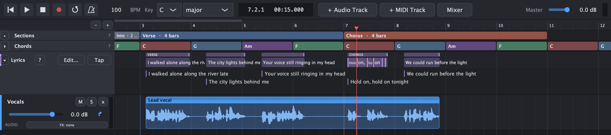
Mix & understand
Follow the sound from the source to the speakers.
What is sound? From moving air to the numbers in a file
From moving air to the numbers in a file
Select an audio clip and the wave editor shows its waveform. Zoom in from the whole clip to single cycles and single samples, and hover to read what you're looking at: silence, the attack of a hit, a fade, or a held note with its pitch.
What is sound? opens a guide for beginners. Every topic has a live picture with your clip as the example, following the playhead while the song plays, and a tone you can play and change as you read. The tone is the guide's own plain stand-in for a synth: DawIt's synth guides play the same shapes with filters and envelopes.
- Sound is moving air: the air in front of a speaker squeezed and thinned out, slowed down, with the pressure it makes
- A waveform is pressure over time: what the line in a clip means
- Amplitude is loudness: decibels, why -6 dB is half, peak against RMS, and clipping over 0 dB
- Frequency is pitch: count the cycles of the tone, see your clip over the same time with its note, and both on the range we hear
- The shape is the timbre: the harmonics of a sine, triangle, saw and square, next to the spectrum of your clip, and the envelope of the note under the playhead: its attack, decay, sustain and release, with their times
- From air to numbers: samples and bit depth, the choices in Bounce to WAV
- Phase: a wave and a copy that adds up or cancels, and why a kick and a bass can thin each other out
- Checking in mono: how much of your clip is lost when left and right are added together, in five bands from the bass up to the highs, with the band that loses most marked, and a switch to hear the whole song in mono
- Taking the vocals out: why the old trick of left minus right also takes the bass and kick, measured on your clip and heard on your speakers, next to Remove vocals

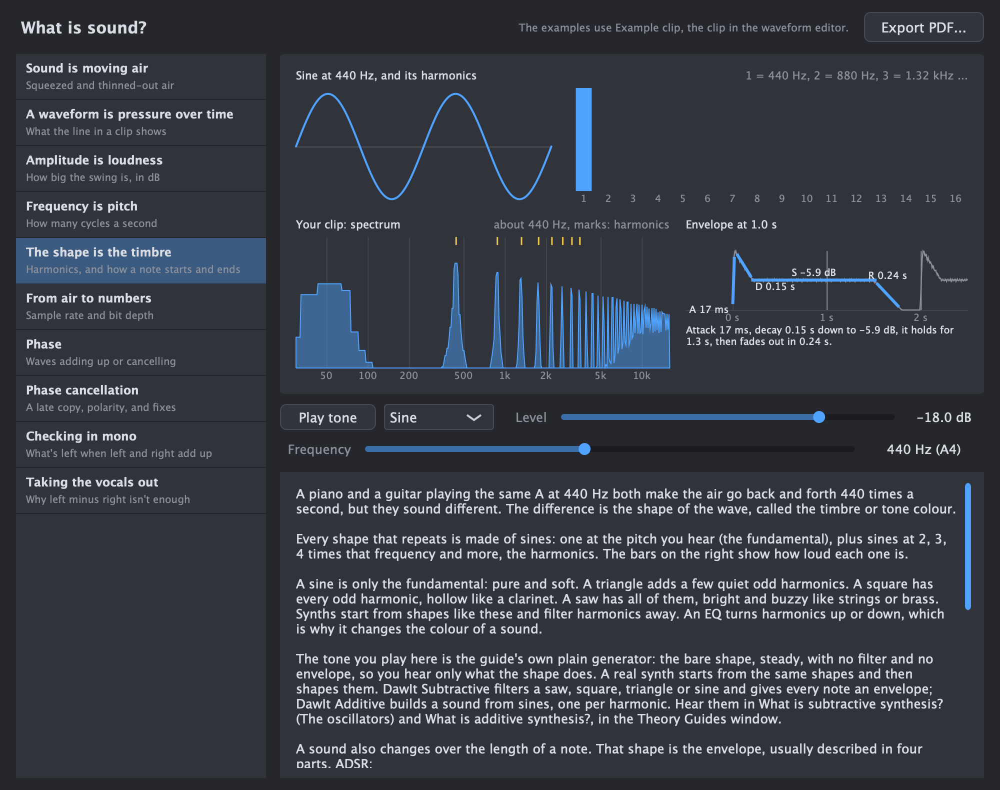
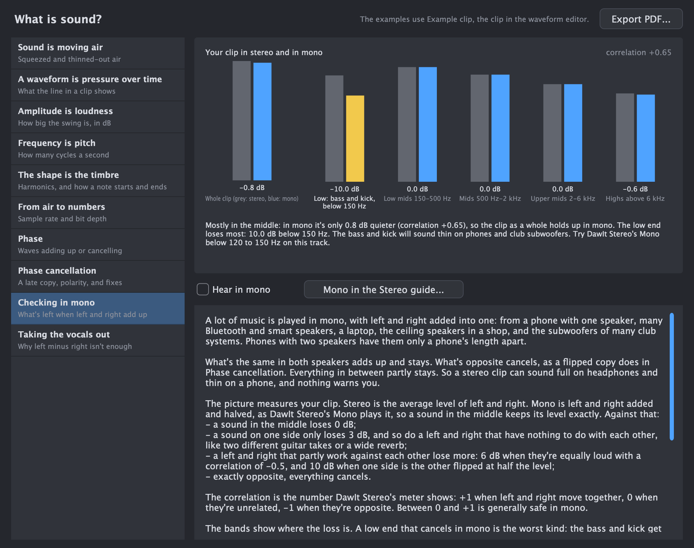
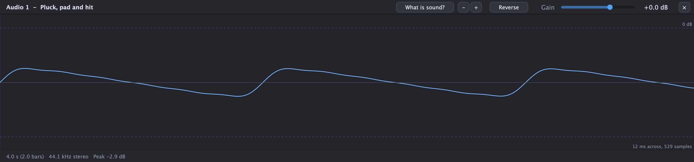
What is MIDI? Instructions, not sound: MIDI byte by byte
Instructions, not sound: MIDI byte by byte
Click What is MIDI? in the piano roll and a guide for beginners opens, with the clip you're editing as the example. It explains why a MIDI clip can play any instrument and an audio clip can't, from the cable to the bytes and the file.
- What MIDI is: which key went down, how hard and when it came up, as your clip's notes become Note On and Note Off
- Where it came from: 1983, when a Sequential Prophet-600 played a Roland Jupiter-6, then MIDI files, General MIDI, USB, MPE and MIDI 2.0
- The cable and its speed: the 5-pin socket, and a C major chord drawn as the bits on the wire, about a millisecond a note
- Messages, byte by byte: your clip's notes in hexadecimal and binary, lit at the playhead while the song plays
- Note numbers and pitch: all 128 notes with a piano's 88 marked. Click a key to hear it and see the message it sends, harder lower on the key
- Velocity, pedals and wheels: your clip's velocities as bars, the sustain pedal, the mod wheel and 14-bit pitch bend
- Time and files: ticks, tempo and MIDI clock, and your clip's own MIDI file, byte by byte, with each part named
- Your clip: its range, whether its velocities vary like a player's, how many bytes it is and how long it takes on a cable

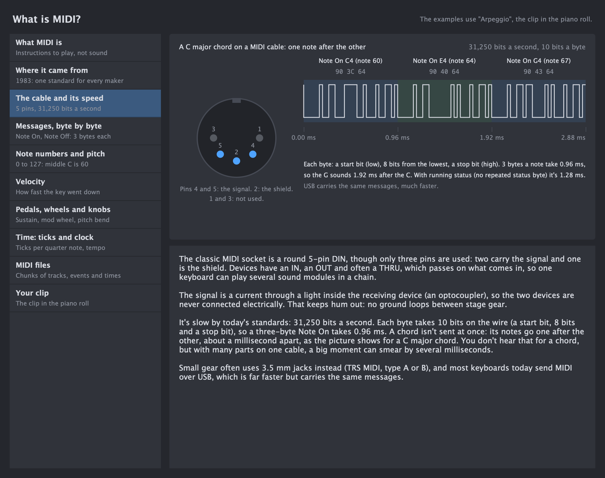
Sounds and mixing Sound right away
Sound right away
- DawIt Synth built in: piano, organ, bass, synth lead, pluck, pad, drums and percussion
- Hand percussion: congas, bongos, shakers, claves, cowbell, triangle and more
- Drums and percussion follow the General MIDI map, so generated grooves play right away
- DawIt EQ, Compressor, Gate, Stereo, Reverb, Delay, Saturation and Distortion built in, each explaining itself as you use it, and when and how it's used
- Or load your own VST3 and Audio Unit instruments and effects
- Drag effects to reorder, bypass with one click
- Volume, pan, mute, solo and level meters per track, in the track headers and in the mixer, buses that group tracks, each with its own effects and fader, and send knobs to a shared reverb or delay
- Audio tracks for loops and reference tracks, with a wave editor that zooms down to single samples
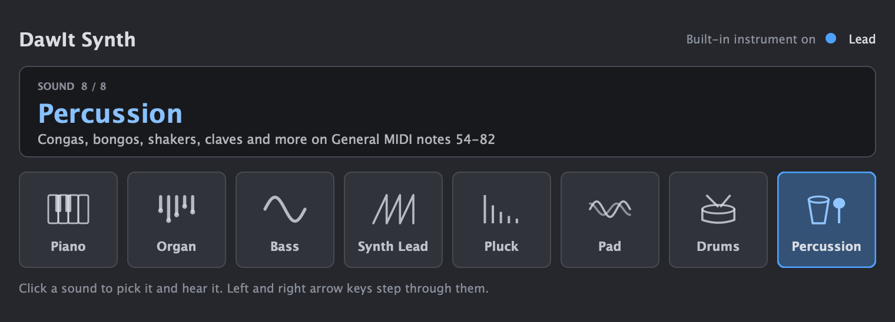
Effects chain Follow the sound through the chain
Follow the sound through the chain
Under the tracks, the device bar shows the selected track's chain in the order the sound flows: its instrument first, then each effect, then the track's fader and the master.
- Meters and peak dB for the level going into and coming out of every step, so you see where the level changes
- DawIt EQ and DawIt Compressor show a tiny picture of their settings with the sound on it: the EQ curve over the spectrum of what comes out, or a dot riding the compressor's curve
- Click a plugin to open it, its dot to bypass it and its x to remove it
- Drag an effect to reorder the chain, with a marker where it will land
- A long chain keeps every plugin readable and scrolls sideways
- + Effect lists DawIt's own effects first, then your VST3 and Audio Unit plugins
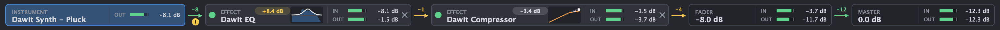
Gain staging See how loud the sound is at every step
See how loud the sound is at every step
On its way to your speakers, the sound passes the instrument, each effect, the track's fader and the master. Gain staging means keeping a sensible level at every one of those steps. The device bar shows it as the track plays, and points out what's worth a look.
- The arrows between the steps take the colour of the level passing through: grey for quiet, green for healthy, yellow for hot and red for over 0 dB, with the peak in dB above them
- Each effect has a badge with how much louder or quieter it makes the sound, because louder almost always sounds better at first. On DawIt EQ and DawIt Compressor, click it to switch on Match level and compare fairly
- A ! under an arrow points at what to check: a very quiet start, an effect that adds 6 dB or more, over 0 dB going into an effect, effects adding gain that the fader takes off again, or the master over 0 dB. Hover over it to read why
- Click the fader or the master to open the mixer
The gain staging guide
Click Gain staging? in the device bar, or a !, to open the guide. It draws the selected track's chain live, as a line of levels over the quiet, healthy, hot and over zones, with what the device bar noticed.
- What gain staging is, and what the colours mean
- Why louder sounds better, and how to compare an effect at the same loudness
- Why the level going into a compressor changes what it does
- Where to turn up and down: the source, the effects, the fader or the master
- When over 0 dB really distorts, and when it doesn't
- Setting the levels of a track, step by step

Buses Put tracks in a bus, and mix them as one
Put tracks in a bus, and mix them as one
A bus is a track that other tracks play into, so a group gets one set of effects and one fader. In DawIt you make one like a folder: Kick, Snare and Hats go into a Drums bus, and you turn the whole kit up, put a compressor on it or mute it in one go.
- Create bus. Select tracks (click, Shift-click for a range, Cmd-click to add or remove), then right-click and choose Create bus, or press Cmd+Shift+G. The bus appears where the first track was, with its name open for typing and a suggestion such as Drums for Kick, Snare and Hats. + Bus adds an empty one
- Its own mix. A bus hears its tracks added together and has its own effects, fader, pan, mute, solo and meter. It plays into the master, or into another bus
- Fold it. A folded bus is one row, and its lane still shows where its tracks play as thin bars
- Move tracks in and out. Drag a track's header onto a bus or out of it, or pick an Output in the right-click menu or under a mixer strip. Escape cancels a drag
- Buses inside buses. Put a bus in another bus, as a Drums bus inside a Band bus
- Solo keeps its way open. Soloing a track in a bus plays it through the bus's effects. Muting a bus silences its tracks while their meters still move
- In the mixer. A bus's strip comes right before its tracks, joined by a bracket in the bus's colour. Under every fader an Output button (→ Master, → Drums) opens the menu that moves the track
- In the device bar. A track's chain goes on into its buses, and a bus's chain starts with From Kick, Snare, Hats. When the tracks in a bus add up over 0 dB, a ! points at it
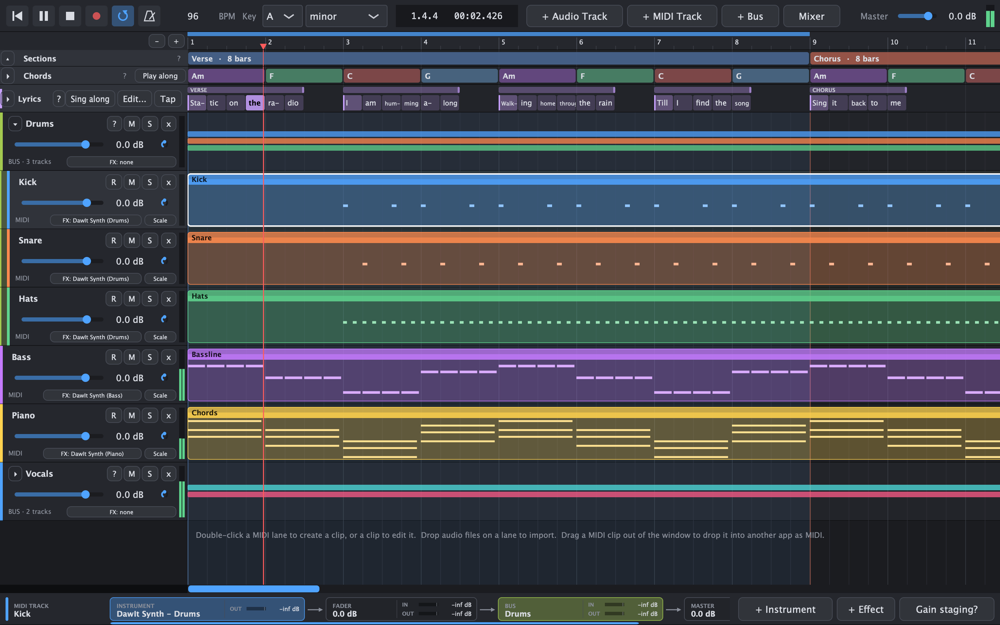
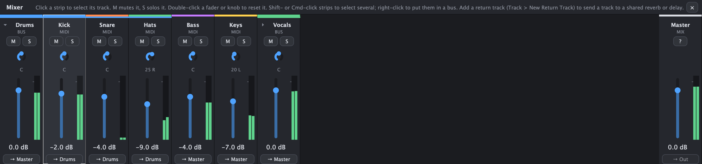
One reverb for the whole song
A reverb on every track costs a lot of computing and makes each track sit in a different room. A return track is one reverb (or delay) that tracks send a copy of themselves to, each at its own level. The send level is also a distance knob: the more a track sends, the further back it sounds.
- Add a return. Choose Track > New Return Track > Reverb, Delay or Empty, or click + Return in the transport bar. A Reverb return holds DawIt Reverb at a starting point made for returns, and a Delay return holds DawIt Delay
- Send rows in the mixer. When the song has a return, every strip gets a row for it between the pan and the fader: a small dial with the return's name beside it, for up to four returns. It goes from Off to +6 dB; double-click turns it off. A name that does not fit is cut short, and the tooltip gives it in full. The inspector lists every return, with its full name
- The Sends button. Every track and bus header has a small Sends button next to FX. Click it for a menu: tick a return to send the track to it (tick it again to switch the send off), or choose New return track > Reverb, Delay or Empty to make one that the track sends to. The mixer then opens on that return's strip, or on the track's own strip when you switch a send off. The menu's last item, About sends and returns..., opens the guide. Returns and the master have no sends, so no button. When the song has no return, the mixer's hint line says how to add one
- Sends in the track menu. Right-click a track (or several) and choose Sends > to turn a send on at -10 dB, or off, or to make a new return that the selected tracks send to. This menu does not open the mixer
- Before or after the fader. A send follows the track's fader by default. Right-click its knob and choose Pre-fader to send the same amount whatever the fader does; the strip then shows PRE
- In the device bar. A track's sends are small chips under its chain, with the return's colour, the level and a meter. Drag one up or down to change the level, or click it to see the return's chain, which starts with Sends from Vocal, Guitar
- The return's row. Its header says RETURN and how many tracks send to it, its lane shows the senders' clips as thin bars, and it plays into the master. Delete it with Delete return track...; the tracks keep playing without it
- Solo and mute. Muting a track silences its sends too. A soloed track is heard with the returns it sends to, and muting a return takes its effect away while the tracks play on, dry
The buses, sends and routing guide
Click the ? in a bus's header, choose About buses, sends and routing... in a track's right-click menu, or click the ? in a return's header. The picture draws your song's routing live, with a meter on every box; click a box to select that track.
- What routing is, and what a bus is for
- Grouping tracks in DawIt, step by step
- Why levels add up: two equal tracks make +6 dB, two different ones about +3 dB
- Glue: one gentle compressor for a group, with a starting point for drums
- The mix bus: the master, its headroom and what not to do to it
- Sends and returns: one reverb shared by many tracks
- Returns in DawIt: add a return, turn up the send
- The inspector: one track's effects, sends, pan and volume, and why sends are separate from effects
- Insert or send: which effects go on the track and which on a return
- Depth with send levels: more reverb sounds further away
- Pre-fader and post-fader: whether the send follows the fader
- Signal flow: the route a sound takes, and why the order of effects matters
- Typical buses in a song, and what soloing and muting do with buses and returns
- Your song's routing: suggestions such as Create a Drums bus from Kick, Snare and Hats or Share one reverb on a return, each with a button that does it

Inspector See one track's effects, sends, pan and volume beside the tracks
See one track's effects, sends, pan and volume beside the tracks
The inspector is the panel on the left of the track headers. It shows the track you clicked last, from top to bottom in the order the sound goes: its effects, its sends, its pan and its volume. Open and close it with View > Inspector or the I key. It is shown until you hide it with the ×.
- It follows your selection. Click a track header or a mixer strip and the inspector shows that track. With several tracks selected it shows the one clicked last, and only that one changes. With nothing selected it shows the master
- Effects. On a MIDI track the instrument comes first, then the effects in order. Click one to open it, click its dot to switch it off, drag it up or down to change the order, or right-click for more. + Effect adds one at the end
- Sends. A row for every return in the song, with its full name, its level and PRE when it is taken before the fader. Drag a knob up to send more, double-click to turn it off. + Send to a new return makes a Reverb, Delay or empty return and sends the track to it at -10 dB
- Mute, solo, output, pan and volume. The same controls as on the mixer strip, with a meter beside the fader
- The same track as in the mixer. It is not a copy: turn a send up in the inspector and the knob in the mixer turns with it
- Returns and the master. A return lists the tracks that send to it and at what level; click one to select it. The master shows its volume and meter, and no pan, effects or sends
- Width. Drag its edge to make it from 200 to 360 px wide. Whether it is open and how wide it is are remembered
- The guide. The ? or the right-click menu opens The inspector topic of the guide to buses, sends and routing, on why sends are separate from effects
![The left half of the main window with the Lead vocal selected. The inspector on the left shows the Lead vocal as a MIDI track playing into Vocals, with mute, solo and an Output button, its instrument DawIt Synth Synth Lead, a Sends list with a purple Reverb and a yellow Delay at -10.0 dB each and a button to send to a new return, then its pan at the centre and its volume fader at 0.0 dB with a meter. Beside it are the track headers of Drums, Kick, Snare, Hats, Bass, Keys, Vocals and Lead vocal with the start of their lanes](assets/screenshots/inspector-main.png)
Signal flow See the whole mix as one live map
See the whole mix as one live map
A song's sound goes through many steps: a source, a chain of effects, a fader, a bus, the master. The Signal Flow window draws all of them in one picture, from left to right, with the level on every line, so you can see where each track's sound goes and how loud it is on the way. Open it with View > Signal Flow... (Cmd+6), or choose Show in Signal Flow... in a track's right-click menu.
- Every step. Each track starts with its source (its audio clips, DawIt Synth or an instrument plugin), then its effects in order and its fader. The line goes on into a bus, where it meets the other tracks of the group, or straight into the master. Buses and returns start with a sum box
- Lines show the level. A line is thicker and brighter the louder it is: grey for quiet, green for healthy, yellow for hot and red over 0 dB. The master shows CLIP for a few seconds after it goes over 0 dB
- Dots keep the beat. While the song plays, dots run along the lines that carry sound. The Moving dots switch turns them off for a still picture, and the lines still show the levels
- Sends. A send is a dashed line in the colour of its return, with its level, and PRE when it is taken before the fader
- Switched off or silent. An effect that is switched off is grey, with the line going round it. A line goes dark where a track is muted, or not heard because another track is soloed
- Small pictures. The EQ, Compressor and Gate boxes show a small picture of their settings at 100% zoom and more
- Click a track. A click on a box or a line selects that track and lights up its path. The rest dims
- Zoom and scroll. From 25% to 200% with the buttons, Cmd+scroll or a pinch. Fit (Cmd+0) keeps the whole song in view. Drag the empty canvas to move, and below 60% it becomes an overview
- It only shows the song. The window changes nothing: change things in the device bar, the mixer or a track's menu, and the map follows
- The guide. How sound flows? opens the Signal flow topic of the guide to buses, sends and routing, with why the order of effects matters. Your song's routing there suggests moving an effect when the order works against you
![The Signal Flow window fitted to the song while it plays. From left to right: Kick, Snare and Hats join a Drums bus with a compressor, then Bass with an EQ, a switched-off saturation and a fader, Keys with a delay and a compressor, Lead vocal with an EQ, a compressor and a fader into a Vocals bus, and Backing vocals dimmed. Dashed lines carry sends to a Reverb and a Delay return, and everything ends in the Master with its meter. The Lead vocal's path is lit in green with white dots, and the rest is dimmed](assets/screenshots/flow-fit.png)
DawIt EQ An equaliser that explains itself
An equaliser that explains itself
Pick DawIt EQ at the top of + Effect in the device bar. It works like any effect in the chain, and the panel on the right explains whatever the mouse is on.
- Six bands, each a low cut, low shelf, bell, notch, high shelf or high cut, with frequency, gain and Q
- Drag a band's dot over the spectrum of your track as it plays, before and after the EQ
- What your settings do, in numbers: a bell at 300 Hz, Q 1.4 works on about 211 to 426 Hz, one octave, with a picture of what Q does
- Starting points for vocals, kick, snare, bass, acoustic guitar, piano, a drum bus, making room for a vocal and removing hum, each band with the reason behind it
- Find a bad frequency walks you through the classic trick: sweep a narrow boost until something jumps out, then turn it into a cut
- Solo a band to hear only what it changes, and Match level to compare without louder sounding better
- What is EQ? opens a guide for beginners, with pictures that follow the window

Where instruments live
Click Instruments and the spectrum makes way for an overview of 13 common instruments, on the same frequency scale as your bands, so you can see what each band touches.
- Kick, snare, toms, cymbals, bass guitar, synth bass, electric and acoustic guitar, piano, strings, brass, and male and female voice
- For each, the range of its notes and how high its overtones reach
- Red boxes where problems usually hide, such as mud, boxiness, harshness and sibilance; green boxes for what a boost brings out, such as thump, click, presence and air
- Hover a row to read about the instrument, its notes and a safe low cut. The other instruments turn grey; click it to keep them grey while you move the bands, until you click again.
- Hover a box to light up that range over the whole graph, and see what your EQ does there right now
What is EQ?, a guide for beginners
Click What is EQ? in the EQ's window, or find it in View > Theory Guides. Its pictures are drawn from the EQ's own filters and follow the settings in the window.
- What an EQ does: from the telephone lines it was invented for to the parametric EQ, with the window's curve over the ranges engineers name
- The frequency ranges: sub-bass to air, what each sounds like, and why one note reaches far above its own pitch
- Bells, shelves and cuts: the six band types, drawn by DawIt EQ's filters
- Q and slopes: Q 1.41 is one octave wide, Q 4.32 a third; a 12 dB per octave low cut at 100 Hz is -3 dB there and -12.3 dB at 50 Hz
- Cut narrow, boost wide: and cut before you boost, with how to find a bad frequency
- Where instruments sit, and masking: their notes and overtones, and making room for a kick in a bass
- Common problems, in words: boomy, thin, muddy, boxy, nasal, harsh, sibilant and dull, with where to look and what to try
- Match level, and how DawIt EQ works: why louder sounds better, and six filters in a row adding up
DawIt Compressor See and hear what a compressor does
See and hear what a compressor does
A compressor turns down whatever gets too loud, so a part sounds more even and sits better in the mix. DawIt Compressor is next to the EQ in + Effect, and explains itself the same way.
- Threshold, ratio, knee, attack, release, makeup, mix, a sidechain filter, and peak or RMS detection
- Every knob explained, with what your setting does in numbers and typical settings per instrument, with the reasons why
- The curve to drag, the last four seconds of your track with what it turned down in red, and meters for in, out and gain reduction
- Pictures of what attack and release do to three hits, and of what ratio and knee do to the curve
- What is compression? opens a guide for beginners, with pictures that follow the window
- 15 starting points: vocals, drums, bass, guitars, piano, pads, the mix bus, parallel drums and a limiter
- Set it up step by step: the threshold from what your track just played, the attack, a release that fits the tempo, and the level matched
- Hear what it removes plays only what the compressor takes away, and Match level compares without louder sounding better
What is compression?, a guide for beginners
Click What is compression? in the compressor's window, or find it in View > Theory Guides. Its pictures run a made-up vocal line and drum hits through the compressor's own curve and timing, with the settings in the window.
- Turning down the loud parts: what a compressor is for, from 1930s radio to the LA-2A and the 1176
- Threshold, ratio and knee: at 4:1 a level 8 dB over comes out 2 dB over; the curves for 2:1, 8:1 and yours, and the corner up close
- Attack and release: how fast it grabs and lets go, drawn for 1, 10 and 30 ms and for 50, 150 and 500 ms next to yours, with typical times per instrument
- Makeup: why compressed sounds seem closer, worked out in numbers, and how far apart loud and quiet are before and after
- Peak or RMS, and the sidechain filter: what the compressor listens to, and why a low cut there stops the mix pumping on every kick
- Parallel compression: the mix knob, and New York compression on drums
- How much, and too much: typical amounts from the starting points, and the signs of overdoing it
- How DawIt Compressor works: from the level to the gain, step by step
DawIt Gate A gate that opens for the notes and closes in the gaps
A gate that opens for the notes and closes in the gaps
A gate turns a sound down while it is quiet, so the hiss, hum and spill from other instruments between the notes stay out. DawIt Gate is next to the compressor in + Effect, and explains itself the same way.
- Threshold and hysteresis: the level it opens at and, a few dB lower, the level it closes at, both drawn as dots on the curve and as dashed lines over the last four seconds of your track
- Range and ratio: close all the way, or only turn the gaps down; a low ratio makes it a gentle expander
- Attack, hold and release: how fast it opens, how long it stays open once the sound has fallen, and how fast it closes, each explained with typical times
- Key filters and key listen: a low cut and a high cut for what the gate listens to, so a kick does not open the snare's microphone, and a switch to hear exactly that
- Eight starting points: a neutral start, kick, snare, toms, distorted guitar, lead vocal, spoken voice and gated reverb, each saying why every knob is set the way it is
- Hits and hiss plays four claps over hiss, even with the song stopped, and Hear what it removes plays only what the gate takes away
- Your track: the noise floor and the loud parts of the last four seconds, and a threshold to try
What is a gate?, a guide for beginners
Click What is a gate? in the gate's window, or find it in View > Theory Guides, under Mixing. Its pictures run the gate's own code on made-up hits, a fading note and a tom, with the settings in the window.
- Closing the gaps: what a gate does, and what it cannot do
- Threshold and hysteresis: where it opens and closes, and why a note fading past a single level makes it chatter
- Range, and gate or expander: silence in the gaps, or just quieter
- Attack, hold and release: keeping the first click of a hit and ending every note cleanly
- The key filter: what the gate listens to, and why that matters on drums
- Where gates are used: drums, guitars and voices, and when not to use one
- Gated reverb: the big drum sound of the 1980s, and how to make it with DawIt Reverb and DawIt Gate
- Too much, how DawIt Gate works, and your track

DawIt Stereo Keep the bass in the middle and set how wide the rest is
Keep the bass in the middle and set how wide the rest is
Low notes that differ between the left and right speakers sound thin on a phone and can make a record's groove too deep. DawIt Stereo, after the gate in + Effect, makes the sound mono below a frequency you choose, with a gradual crossover, and sets the width above it. It explains itself the same way as the other effects.
- Mono below: drag the frequency line over the picture of mid and side by frequency, and choose a slope of 12, 24 or 48 dB per octave for how gradual the crossover is
- Width: from 0% (mono) to 200% for everything above that frequency; Match level keeps a wider sound from simply sounding louder
- Goniometers and correlation bars: the sound going in and coming out as dots, up for what both speakers share and sideways for what differs, with the low end in amber and a bar from -1 to +1 for the low end and for the whole sound
- Listen: Mono plays the sum a phone would play, and Side plays only what differs, so you hear what disappears
- Six starting points: a mix bus, a synth bass, a fully mono source, vinyl, wide pads and a mono check, each saying why every knob is set the way it is
- Wide bass plays a low A and a shaker, both wide, even with the song stopped, and Hear what it removes plays only what the crossover takes away
- Your track: how far the side is under the mid below the crossover and overall, and the correlation going in and coming out, over the last 10 seconds of sound
What is stereo width?, a guide for beginners
Click What is stereo width? in the stereo window, or find it in View > Theory Guides, under Mixing. Its pictures follow the settings in the window.
- Left, right and in between, and mid and side: what stereo is, and what both speakers share and what differs
- Seeing stereo: the goniometer and the correlation meter
- Mono: phones, clubs and the sum, and what disappears when the two become one
- Why the low end stays in the middle: bass and kick, solid on every system
- Mono below and Width: splitting the sound at a frequency, and turning the side down or up
- Where to use it and too much: mix bus, bass, pads and vinyl, and when narrowing or widening goes wrong
- How DawIt Stereo works, and your track

DawIt Tune See how in tune a voice is, and move it closer if you want
See how in tune a voice is, and move it closer if you want
DawIt Tune, from + Effect (put it first on a single vocal track), measures the pitch of one voice. In Correct mode it also moves each note towards the nearest note you allow, from a light fix to a hard-tuned sound. It explains itself the same way as the other effects.
- Check: the default, which only measures. The tuner shows the note, how many cents sharp or flat it is (green within 10, yellow within 25, red beyond) and whether it is in the song's key. The trace shows the last 4, 8 or 16 seconds on the rows of a piano roll; hover for the bar, the note and the cents, and click to move the playhead
- Correct: moves each note towards the notes of the key, the chord in that bar, or any semitone, with Speed, Amount, Tolerance and Keep vibrato. The voice keeps its own character, because its formants stay where they are
- Four starting points: Check only, Natural fix, Gentle polish and Hard tune, and Hear the original to compare
- Play an off note: a sung “ah” 30 cents flat, played through it even with the song stopped
- A little ahead: it looks a little ahead, so it holds the sound back (27 ms at 48 kHz), and DawIt plays that track's clips the same amount earlier to stay in time. On a bus or a return that can't be done, and the window says so
- Your track: how in tune each section was, from what DawIt Tune heard while the song played
What is pitch correction?, a guide for beginners
Click What is pitch correction? in the tune window, or find it in View > Theory Guides, under Singing. Its pictures follow the settings in the window.
- What it is, and cents: measuring each sung note and moving it, and how far out is out
- Finding the pitch: how DawIt Tune hears which note you sing
- Target notes: the key, the chords or every semitone
- Speed, amount and tolerance, and vibrato: how fast and how far notes are moved, and moving the middle of a note, not its swing
- Formants and hard tune: moving the pitch without moving the voice's colour, and when the steps are the point
- Using it well, and your track: check first, fix lightly, and how in tune this track is

DawIt Reverb Hear the difference between a room, a plate and a spring
Hear the difference between a room, a plate and a spring
A room answers a sound with echoes off its walls. A plate rings through a steel sheet; a spring sends the sound along a coil. DawIt Reverb, in + Effect, lets you hear each kind and see what makes it ring.
- Six types. Choose Digital, Room, Hall, Chamber, Plate or Spring. Each makes the sound differently; switching keeps every knob. Digital keeps older projects sounding as they did
- Shape the space. Pre-delay, size, decay, damping, a low cut on the reverb only, early reflections, width and mix. Early is dimmed on Plate and Spring, which have no walls
- See what one clap becomes. The direct sound, early reflections and tail, with your song's beats and dots to drag for pre-delay and decay. Beside it, a moving drawing of the chosen room, hall, chamber, plate or spring tank
- Start with a sound. Lead vocal and Snare plate, Small room and Strings or choir, Echo chamber and Spring guitar, plus starting points for bass, ambient sounds and shared returns. Each names its type and explains every setting
- Hear what you are setting. Click Clap, even with the song stopped, or Hear only the reverb. Point at a knob to read what it does, your setting in numbers and typical choices
Six kinds, side by side and by ear
What is reverb? opens from the effect, the Type menu or View > Theory Guides.... Its sixteen topics go from sound bouncing off a wall to using reverb in a mix.
- Compare the starts. Kinds of reverb puts six clap responses side by side, with the first 100 milliseconds enlarged. Click Hear each in turn to compare the kinds, three seconds apart
- Follow the real thing. A page each for Room, Hall, Chamber, Plate and Spring, with a moving drawing and its own clap. Hear that kind's starting point without changing your reverb
- Understand the knobs. Direct sound, early reflections and the tail; decay and Sabine's formula; damping as a spectrogram; size, distance and pre-delay; digital and convolution reverb; gated, reverse, shimmer and modulated effects; and how DawIt Reverb works
- Try it on your track. Your track reads names such as Vocal, BV, Snare, Bass and Guitar, then suggests a type and settings to try. A return gets advice on its Mix. These are habits, not rules


DawIt Delay Echoes that fit the song
Echoes that fit the song
A delay plays a sound again a moment later, and with feedback, again and again. DawIt Delay shows where every echo lands in your song's groove.
- A time that follows the tempo, from 1/32 to a bar with dotted notes and triplets, or free in milliseconds; feedback; a high and low cut that make every repeat darker and thinner, like tape; stereo or ping-pong; and mix
- A clap and its echoes in the left and right speaker against the beats, each echo as loud and as dark as it comes out. Drag the first for the time, the second for the feedback
- Where the echo comes from: the wall that would give it, from a room to a canyon
- Every control explained, in numbers: each echo is 8.0 dB quieter than the one before; 8 echoes are heard before they're 60 dB down
- Starting points for slapback, vocal echoes, the dotted-eighth guitar, ping-pong, a wide double, dub and ambient repeats
- What is delay?: echoes in the world, how a delay works, feedback, time and tempo, short delays (slapback, doubling, the Haas effect, comb filtering), the sound of the repeats, ping-pong, and delay in a mix
DawIt Saturation Warmth, grit and fuzz, and where they come from
Warmth, grit and fuzz, and where they come from
Saturation pushes a sound into a curve that rounds off its peaks, like tape, a tube amp or a fuzz pedal pushed too far. The new shape adds harmonics. DawIt Saturation shows them.
- Drive; tape, tube or clip; a tone control for the fizz; output, mix for parallel saturation, and match level, on from the start
- The curve with the part your track uses drawn thick, and a sine before and after it, made as loud. Drag the curve for the drive
- The harmonics it adds to a note at your track's level, even ones in yellow and odd ones in orange, each named as an interval, with the THD
- Play a note sends a pure A through it; Hear only what it adds plays the harmonics on their own
- Four times oversampled, so its harmonics don't fold back as tones that don't belong
- Starting points for a warm vocal, bass on small speakers, drum crunch, mix glue, synth warmth, fuzz guitar and lo-fi radio
- What is saturation?: harmonics, even and odd, soft and hard, tape, tubes and transistors, chords and intermodulation, loudness, aliasing (computed for real), saturation in a mix, and how it works
DawIt Distortion From crunch to fuzz, like a pedal into an amp
From crunch to fuzz, like a pedal into an amp
Distortion is saturation pushed all the way: the sound is driven far past the curve's bend, until most of the wave is cut or folded. DawIt Distortion shows what that does to a note, and when it's the right tool.
- Five curves: overdrive, distortion, fuzz (which sputters as notes die), rectify (an octave up) and fold
- Tight cuts the lows before the curve so they don't turn to mud; tone and a guitar speaker take away the fizz after it
- Drive up to 48 dB, output, mix for parallel distortion on bass and drums, and match level, on from the start
- The curve with the part your note uses, the harmonics it ends up with after the filters, and the filters before and after the curve
- Every knob says what it's set to for which sounds; starting points for edge of breakup, rock rhythm, high-gain metal, a singing lead, vintage and octave fuzz, bass grit, drum smash, a megaphone vocal and synth folds
- What is distortion?: the five curves, overdrive, distortion and fuzz pedals and how they feel, sustain and noise, octaves and folds, why the lows are cut first, the guitar speaker, and when and how to use it in a mix
Make a sound
Build the sound and learn what gives it its colour.
DawIt Subtractive A synth that tells you what every knob does
A synth that tells you what every knob does
Most synth basses, leads, pads and brass are made the same way: start with a wave full of harmonics, and take away what you don't want with a filter. DawIt Subtractive is a synthesiser built that way, and it shows and explains every step. Pick it with + Instrument on a MIDI track.
- The classic parts: two oscillators (saw, square and pulse, triangle, sine) with pitch and detune, noise, a 12 or 24 dB filter with resonance, filter and amp envelopes, an LFO, glide, and poly or mono
- See the filter work: the harmonics of a note as bars, before and after the filter, with its curve over them. Drag it for the cutoff and resonance, and watch the envelope open and close it as you play
- Every knob explained: hover one to read what it does, how it's usually set, and what it does right now in numbers: where the filter opens to, how fast two detuned oscillators beat
- Eleven starting points: bass, acid bass, sub bass, warm pad, pluck, synth brass, lead, string machine, PWM strings and wobble bass, each saying why every knob is set the way it is
- Hear what the filter does: play a note from the window, and switch the filter off and on to hear what it takes away
- What is subtractive synthesis? The oscillators and their harmonics, detune, the filter and resonance, envelopes, the LFO, voices and glide, and how to build a sound step by step, from Init to your own, with recipes for common sounds
DawIt Additive Build a sound from sines, one harmonic at a time
Build a sound from sines, one harmonic at a time
Every steady sound is a mix of sines at the harmonics of its note, and how loud each one is gives the sound its colour. DawIt Additive builds its notes that way: you draw the harmonics as bars and hear the sound change, the way an organist pulls out drawbars. Pick it with + Instrument on a MIDI track.
- 32 harmonics to draw: drag over the bars to set them, or fill them as a sine, a saw, a square, a triangle or an organ, and see the wave they add up to
- Change them all at once: brightness tilts them darker or brighter, Even takes out the 2nd, 4th, 6th... for a hollow sound, and Stretch pulls the high ones sharp, from a piano string to a metal bell
- Harmonics that move: a swell brings the high harmonics in after the note starts, as on brass, and a fade makes them die first, as on a plucked string. A picture shows every harmonic over a note
- Every knob explained: hover one to read what it does, how it's usually set, and what it does right now in numbers: how many cents sharp the 8th harmonic is, how far the 2nd has faded a second into a note
- Twelve starting points: drawbar organ, a saw from sines, hollow reed, flute, electric keys, metal bell, plucked string, brass swell, an "ah" pad, shimmer pad and sub bass, each saying why its harmonics are drawn the way they are
- Hear what the harmonics add: play a note from the window, and switch to the 1st harmonic alone: the pitch stays, the colour goes
- What is additive synthesis? The harmonic series as notes, the classic waves built from sines, why the ear hardly hears phase, harmonics that move, stretched partials in pianos and bells, the Hammond's drawbars, and how to build a sound step by step
![DawIt Additive on the Plucked string starting point while a note plays: the 32 harmonics of A3 as bars, their outlines falling from the 1st to the 32nd and the colour inside them showing that only the first nine are still heard, the higher ones already faded; the wave they add up to, close to a sine, with the 1st harmonic alone in grey; a note over time with a row per harmonic and the amp envelope over it; the last four seconds; two rows of knobs from the harmonics to the output; and the panel explaining the fade: the 2nd harmonic halves in 250 ms, the 8th in 36 ms](assets/screenshots/additive.png)
DawIt FM Bend one sine with another, and hear where the DX7's sounds came from
Bend one sine with another, and hear where the DX7's sounds came from
Move a sine's pitch up and down slowly and you hear vibrato. Move it at audio speed and you hear new partials instead, sidebands on both sides of the note. That's FM, and it's how the Yamaha DX7 made the electric pianos, basses and bells of the 1980s. DawIt FM has four sines, the operators, and shows what each one does to the others. Pick it with + Instrument on a MIDI track.
- Four operators, eight ways to wire them: each with a ratio to the note, a level and its own envelope. The picture shows which ones modulate which and which you hear. Click one to show its knobs, drag up or down on it for its level, right-click to change the algorithm
- The partials as they are now: the spectrum of the note measured from the sound, harmonics in purple and the partials between them in amber, so you can see a sound turn from in tune to clangorous as the ratio moves off a whole number
- The index, explained: a modulator's level is how hard it bends its carrier. Hover it to read how much of the carrier is left, how loud the first sidebands are, and how wide the sound spreads
- Every knob explained: what it does, how it's usually set, and where the sidebands of each modulator land right now
- Eleven starting points: an electric piano, an FM bass, Chowning's bell, brass, a hollow reed, an organ from four sines, a marimba, a glass pad and a feedback lead, each saying what every operator does in it
- Hear what the modulation adds: play a note from the window, and switch to the carriers alone, plain sines
- What is FM synthesis? Carriers and modulators, sidebands and the Bessel functions, ratios in tune or clangorous, envelopes that move the brightness, algorithms, feedback, and how to build a sound step by step
![DawIt FM on the Chowning's bell starting point while a note plays: the operators as a stack of four boxes, operator 2 at 1.40 times the note with an index of 10 modulating operator 1, the carrier, and operators 3 and 4 off; the partials of A3 measured from the sound, most of them amber because they fall between the harmonics, a few purple on the harmonics, up to 4.84 kHz; the wave against the carrier as a plain sine; the last four seconds; the knobs of operator 2 with its ratio, fine at +40%, level and envelope; and the panel explaining what each operator does in the bell](assets/screenshots/fm.png)
DawIt Drums Make every drum from scratch, the way the 808 did
Make every drum from scratch, the way the 808 did
A kick is a sine that starts high and falls. A snare is a short tone with noise for its wires. Hi-hats are six square waves that clash like metal. That's how Roland's TR-808 made the drums of hip-hop, electro and pop, and how DawIt Drums makes them, with every part shown and explained. Pick it with + Instrument on a MIDI track; it plays the General MIDI drum map, so a MIDI file's drums play the right drums.
- Nine drums to click and play: kick, snare, clap, two toms, closed and open hi-hat, cymbal and cowbell, each pad with the note that plays it and lighting up as it sounds
- See a hit come apart: the tone, the noise and the falling pitch of the selected drum over time, and where its frequencies sit
- Shape each drum: tune, bend and bend time for the punch, decay for the boom, noise and its filter for rattle and hiss, a click for the attack. A closed hi-hat chokes an open one
- Every knob explained: hover one to read what it does, how it's usually set, and what it does now in numbers: which note the kick settles on, where the pitch is 30 ms into a hit
- Seven kits: an 808-style kit, 909-style, a trap kit with a long 808, techno, boom bap, electro with zaps and pews, and tight pop, each saying what matters in each drum
- What is drum synthesis? Drum machines from the Sideman to the 909, the kick, the snare, metal from square waves, the clap, toms and cowbell, decay and choke, velocity and groove, tuning drums to the song, and where each drum sits
![DawIt Drums on the 808-style kit just after a snare hit: nine coloured pads with their MIDI notes, the snare outlined; one snare hit over 230 ms with its tone in green, its noise in amber and its pitch falling from 270 to 180 Hz in blue; its frequencies, the tone as two peaks around 200 and 290 Hz and the noise as a broad band above 1 kHz; the last four seconds; the snare's knobs for tune, bend, decay, noise, noise decay and tone, the hit and the kit; and the panel describing every drum of the kit](assets/screenshots/drums.png)
DawIt Physical Play a model of the instrument: a string, a bow, a reed
Play a model of the instrument: a string, a bow, a reed
The other synths build a sound from waves. DawIt Physical builds the instrument: a string or a tube, and a pick, a hammer, a bow or a breath to play it. A wave runs round the string, one trip each period, losing a little of its highs every time; the sound comes out of the model the way it comes out of a real guitar or clarinet. Pick it with + Instrument on a MIDI track.
- Four ways to play it: pluck (a burst of noise, as in Karplus and Strong's algorithm of 1983), strike with a hard or a felt hammer, bow (the hair sticks and slips once a period, for as long as the key is held), or blow through a reed into a tube
- Drag where it's played: move the pick along the string and hear harmonics come and go. At a fifth of the way the 5th, 10th and 15th are missing; in the middle every even one
- A string or a tube: a string rings with every harmonic, a tube closed at one end, like a clarinet, only the odd ones
- See the sound: the harmonics of the note measured as it plays, how long each one rings with the decay and damping, and the last 4 seconds. Hear the exciter alone takes the string away, so you hear the burst of noise that becomes a note
- Fourteen starting points: a plucked string, the original Karplus-Strong, nylon and steel guitars, harp, fingered bass, slide guitar, hammered dulcimer, felt hammer, pizzicato, cello, clarinet, breathy reed and a plucked tube, each saying why it sounds the way it does
- What is physical modelling? Modelling the instrument instead of the sound, a wave running round a loop, noise turning into a note, nodes and where to play, why the highs die first, plucks and strikes, the bow's stick and slip, and why a clarinet is hollow
![DawIt Physical on the Bowed cello starting point, 600 ms into a note: on the left the string from bridge to nut with a pink bow crossing it at 18% and the string bent by the note, the 11th harmonic noted as missing; the harmonics of A3, the strongest around -20 dB among the first six and falling to about -60 dB by the 24th; how long each harmonic rings, from about 2 seconds for the 1st to under 200 ms for the 16th, with a dashed line at 250 ms for after the key is let go; the last four seconds of the note rising in the bow's attack; the knobs for the exciter with hardness greyed, the resonator, vibrato and playing; and the panel explaining why each knob of the cello is set the way it is](assets/screenshots/physical.png)
Work & export
Find your way around, keep your work and take it further.
The screen One window, six areas
One window, six areas
- Transport Play, record, loop, metronome, tempo and key.
- Chord track One chord per bar.
- Tracks Arm, mute, solo, volume, pan and Scale.
- Arrangement Your clips on a timeline.
- Device bar Instrument, effects, fader and master of the selected track, in the order the sound flows, with the level at every step.
- Clip editor or mixer Follows what you select: the piano roll for a MIDI clip, the wave editor for an audio clip, or the mixer (Cmd+2).
Theory Guides Every guide in one place, with a path to start on
Every guide in one place, with a path to start on
Each guide in DawIt opens from where its theory applies: the chord guide from the chord menu, What is reverb? from the reverb's window. View > Theory Guides... (Cmd+G) also lists the guides in one window, so you can read the theory on its own, without knowing where each guide lives.
- Start here: a numbered path through sound, rhythm, chords, song structure, styles of music, gain staging, EQ and compression
- Ten areas: sound, MIDI, rhythm, reading music, chords and keys, writing songs, singing, mixing, effects and synthesis, each with its colour, or every guide at once
- A card per guide: what it covers, where else it opens from, and its topics as buttons. Click a topic to open the guide right there, or the card to open it at the start
- Search: type a word or a question, such as triplet, muddy vocal or what is attack?, and the guides that have every word come first, with the topics that match outlined
- Try an effect or synth without a track: the guides to the built-in effects and synths open on the one on your selected track, or the first one in your song. With none in the song, they open one on no track that still plays its clap or test note, so you can turn its knobs and listen
![The Theory Guides window on Start here. On the left, Start here with 7 guides, then the areas Sound, MIDI, Rhythm, Chords and keys, Writing songs, Singing, Mixing, Effects and Synthesis with how many guides each has, and All guides with 22. On the right, numbered cards in each area's colour: 1 What is sound?, 2 Note lengths, beats and bars, 3 Chord progressions, 4 Song structure and 5 Gain staging, each with a sentence on what it covers, where else it opens from, and its topics as rounded buttons, such as Frequency is pitch, Dotted notes and triplets and The circle of fifths](assets/screenshots/theory-guides.png)
DawIt plugins Take DawIt's effects and synths into your DAW
Take DawIt's effects and synths into your DAW
DawIt's own effects and synths also come as plugins for other programs, with the same window, the same knobs and the same parameters.
- Thirteen plugins. EQ, Compressor, Gate, Stereo, Reverb, Delay, Saturation and Distortion, and the Subtractive, Additive, FM, Drums and Physical synths. DawIt Tune stays in the app.
- VST3 and Audio Unit. VST3 on macOS, Windows and Linux, and Audio Unit on macOS, for hosts such as Logic that only load Audio Units.
- Under the maker DawIt. They are named "DawIt Reverb" and so on, and appear as effects or instruments. Parameters can be automated, with the same value texts as in DawIt ("350 ms").
- The guide opens inside the plugin window. The "What is ...?" guide slides over the controls, with a Back to the controls button (or Esc). There is no PDF export, and the overview says the plugin is part of DawIt.
- The same sound in both. A sound saved in DawIt loads the same in a host, and the other way round.
- Your track. The plugins can't read the host's track name yet, so a Your track page calls it "This track".
-
Built from the source for now.
./build.sh --pluginsmakes the.vst3and.componentfiles, and./build.sh --install-pluginscopies them to your plug-in folders. There are no downloads yet, and they are not signed for distribution.
No features match that search. Try another word, or choose Everything.
File → New Project from Style… starts an editable song in one of fourteen styles, with sections, chords, parts, a drum bus and a shared reverb. Choose a key and tempo, then change the result to make it yours.
Your next step
Start with a little curiosity.
Open a guide, try an idea, and hear what changes.